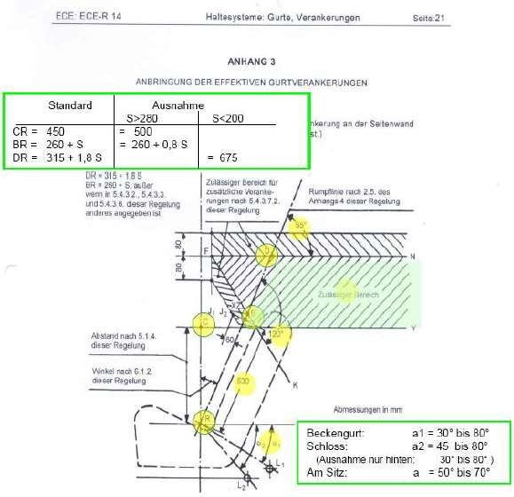
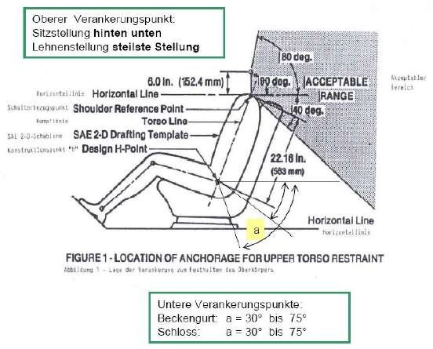
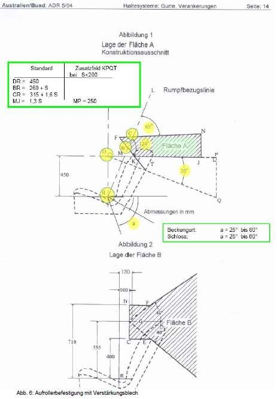
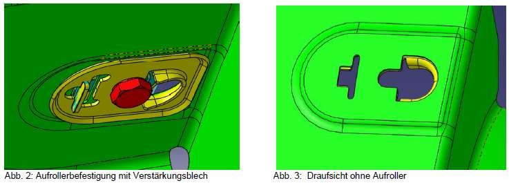
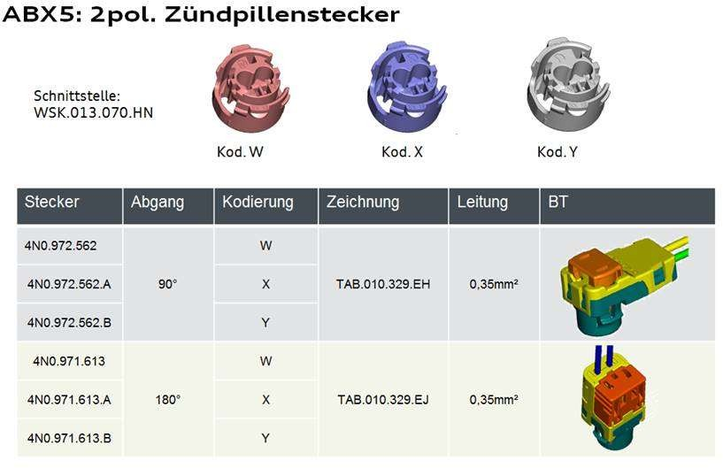

V33.00_BT-LAH_Final_Basismodul-TE-V33.01_Mai[redacted-ext]
[redacted-person]
Gültig für alle Sitzreihen
[redacted]: LAH DUM.857.Q
Autor Benjamin, Müller
Abt./OE [redacted-person]-31
Telefon [redacted-phone]4
Mobil [redacted-phone]
Telefax -
E-Mail [redacted-email]
Erstausgabe [redacted-phone]
Änderungsstand [redacted-phone]
Verteiler
[redacted-co]: EI-31 [redacted-person] Abt./OE, Kostenstelle, Name
Abt./OE, Kostenstelle, [redacted-person]./OE, Kostenstelle, Name
[I: BT-LAH[redacted-ext]]
Abstimmung
[I: BT-LAH-941]
Änderungsdokumentation
Inhaltsverzeichnis
Definitionen, Begriffe, Abkürzungen 51
Abkürzungen 51
[I: BT-LAH-4]
Das vorliegende Bauteil-Lastenheft (BT-LAH) ist angelehnt an die Struktur des VDA- [redacted-person] 2 (www.vda-qmc.de) und beschreibt komponentenspezifische Anforderungen. Das VDA-Modul 1 wird durch die [redacted-co]99000 abgebildet und beschreibt komponentenübergreifende allgemeine Anforderungen zur Leistungsbringung im Rahmen der Bauteilentwicklung.
[I: BT-LAH-13]
Die vom Auftragnehmer zu erfüllenden Anforderungen sind in der Identifikationsnummer (z. B: [A: BT-LAH-1]) grundsätzlich durch ein "A" gekennzeichnet. Textteile, die durch ein "I" gekennzeichnet sind, sind Informationen zum besseren Verständnis des BT-LAH. Gibt es keine Identifikationsnummer oder keine Kennzeichnung mit "A" bzw. "I", so handelt es sich ebenfalls um eine Anforderung.
[A: BT-LAH-5]
Das vorliegende Bauteil-Lastenheft und die Norm [redacted-co]99000 inkl. Teil 1 bis Teil 4 sind zusammen Grundlage des zu erbringenden Leistungsumfanges des Auftragnehmers.
[A: BT-LAH-6]
Dieses BT-LAH beschreibt Leistungen, Anforderungen, Prüf- und Erprobungsbedingungen, die das zu entwickelnde Produkt und der Auftragnehmer erfüllen müssen.
[redacted-person] beinhaltet baureihenübergreifende Anforderungen zur Anordnung der Sicherheitsgurte vorne und hinten
[I: BT-LAH[redacted-ext]]
Vertraulich. [redacted-person] vorbehalten. Weitergabe oder Vervielfältigung ohne vorherige schriftliche Zustimmung des Fachbereiches der [redacted-person] verboten. Vertragspartner erhalten dieses Dokument nur über die zuständige Beschaffungsabteilung.
© [redacted-person]
Vor dem Hintergrund der neuen Fahrzeugprojekte, sollen neue ZSB Sicherheitsgurtsysteme (u.[redacted-person], Gurtschlösser, Gurthöhenversteller, usw.…) im FZG so angeordnet werden, dass alle Vorgaben eingehalten werden und sämtlich Anforderung an das System erfüllt werden. Es wird eine Anordnung erwartet, welche eindeutige Verbesserungen hinsichtlich Sicherheit, Bedienbarkeit, Erreichbarkeit, Komfort, Gewicht, Geräusche, etc. ergibt.
Das vorliegende Lastenheft dient zur Festlegung der technischen Daten und Randbedingungen für den zu beschreibenden Leistungsumfang.
[redacted-person] der Entwicklung soll sein, ein allen Richtlinien und Gesetzen entsprechendes Gurtsystem zu entwickeln, das den hohen Funktions-, Komfort- und Qualitätsansprüchen der [redacted-co] entspricht.
Es gilt die Vorgabe, einen maximalen COP Ansatz zu fahren, Synergien zu nutzen und alle Randbedingungen einzuhalten.
Die zu positionierenden Komponenten müssen sämtliche gesetzliche und interne Anforderungen erfüllen, mit einer Sicherheit von mindestens 20%. Zusätzlich sind die Anforderungen hinsichtlich Verbrauchertests zu erfüllen (siehe [redacted-person] Front- und Fondrückhaltesystem des jeweiligen Fahrzeugprojekts; ebenso betroffen sind die Kindersicherheitsanforderungen).
Bezeichnung des Zielfahrzeuges: siehe Dachlastenheft [redacted-person]-41
[A: BT-LAH-21]
Entwicklungsauftragsnummer: siehe Dachlastenheft [redacted-person]-41
[A: BT-LAH-22]
Zielmarkt: siehe Dachlastenheft [redacted-person]-41
[A: BT-LAH-25]
Die relevanten Gesetzesanforderungen der Zielmärkte sind zu erfüllen.
[A: BT-LAH-26]
Target: Dachlastenheft [redacted-person]-41
Grundsätzlich gilt: so viele wie nötig, so wenig wie möglich
[A: BT-LAH-916]
Bauraum für Gurtaufroller analog Modultabelle:
Die CAD Daten der Module sind im KVS unter ENT.[redacted-phone]* zu finden.
[redacted-person] welches Modul bei der Einplanung zu verwenden ist, ist dem fahrzeugspezifischen Lastenheft zu entnehmen.
[redacted-person] des Aufrollers ist so zu gestalten, dass ein Sensor aus dem Sensorkatalog verwendet werden kann 🡪 siehe LAH.DUM.857.D
Ziel soll sein diese Winkellagen einzuhalten, sollte das nicht möglich sein, so ist mit dem Komponentenverantwortlichen für Aufroller bei [redacted-person]-31 Rücksprache zu halten. [redacted-person] einer Teilenummer über alle Derivate ist anzustreben.
Am NAR-Markt sind sämtliche Gurte mit einer KiSi-Funktion auszustatten, ausgenommen Fahrerseite.
[redacted-person] zu Karosse/Verkleidung/Anbauteilen sind gemäß DGL vorzuhalten.
Für vorne gilt: Abstände zu den Türscharnierschrauben mit [redacted-person] sind einzuhalten. [redacted-person] siehe DGL [redacted-person]-31.
Es ist eine funktionelle und optisch ansprechende Anordnung anzustreben, die benachbarte Bauteile, wie z.[redacted-person] Handrad, in ihrer Funktion nicht beeinträchtigt.
[redacted-person] und Blende müssen einzeln, zerstörungsfrei und einfach austauschbar sein.
Auf der zweiten Sitzreihe gilt zusätzlich:
[redacted-person] links und rechts außen soll baugleich ausgeführt werden und damit die gleiche Teilenummer aufweisen.
[redacted-person] in der Klapplehne muss eine Sensorabschaltung besitzen, die während des Klappvorgangs im Eingriff ist.
Über eine Codierung der Schlosszungen und den dazugehörigen Schlössern muss sichergestellt werden, dass die Insassen sich nur mit den dafür vorgesehenen Schloss-Zungen-Kombinationen anschnallen können.
Es sollte eine Konstruktion ohne Umlenker (Direktabzug), außer bei geforderter Gurthöhenverstellung, oder Gurtbandverlauf-Problemen, angestrebt werden.
[redacted-person] muss so positioniert sein, dass das Nahtbild beim Klappen der Sitzanlage keine Beschädigungen verursachen kann. [redacted-person] darf sich beim Klappvorgang nicht hinter der Lehne verklemmen.
[redacted-person] sollte über einen Stoppknopf möglichst klapperfrei und gut erreichbar angeordnet sein. [redacted-person] auf den hinteren Sitzreihen sollten die gleiche Höhe haben (optisch auf einer Linie).
[redacted-person] Zündkabel und Gurtband muss so erfolgen, dass das Gurtband den geforderten Abstand zum Kabel einhält. Hierzu ist das Zündkabel an der dem Stecker gegenüberliegenden Aufrollerseite zu verklipsen. Der weitere Verlauf der Zündleitung muss außerhalb des Funktionsbereiches des Sicherheitsgurtes liegen.
[redacted-person] relativ zur jeweiligen Gurtführung muss so gewählt werden, dass ein seitlicher Schrägzug von ± 2° nicht überschritten wird und der Abzugswinkel relativ zur Anschraubfläche so, dass auf vorhandene Retraktor-Gurtbandführungen zurückgegriffen werden kann. Max. Auszugswinkel siehe DGL.
Montagefreigang: Freigang zum Eindrehen der Gurtrolle mit Hand/Finger. [redacted-person] der Einbauöffnung in der B-Säule beträgt 142.5 mm.
[redacted-person] ist zunächst theoretisch anhand einer CAD-Untersuchung auszuführen. Ebenso ist ein Hardwareversuch mit Versuchsteilen durchzuführen und die Verbaubarkeit und die Einhaltung der notwendigen Montagefreigänge von der Montageplanung zu bestätigen.
Freiraum für den Anschluss der Strafferzündleitung, Schaltbarkeit und ECU ist vorzuhalten. Montagefreigang ist mit zu berücksichtigen. [redacted-person] von Adapterleitungen und Steckern muss vermieden werden.
[redacted-person] des vorderen Aufrollers ist als so genannte „Z-Montage“ zu konzipieren, d.h., dass der Aufroller von oben in die B-Säule eingeschwenkt werden kann und kein „Überhub“ notwendig ist.
[redacted-person] ist darüber hinaus so zu konzipieren, dass der Aufroller vor der Verschraubung selbstständig in der korrekten Einbauposition verweilt. Dazu soll der T-Anschlag verwendet werden.
Ebenfalls ist eine Verdrehsicherung in Schraubrichtung vorzusehen, damit der Aufroller die Einbaulage nicht verlässt. Dazu soll der T-Anschlag verwendet werden.
Standardmäßig beträgt das Anziehdrehmoment 40 Nm (gemäß AD18).
[redacted-person] eines Gurtaufrollers auf der falschen Fahrzeugseite muss ausgeschlossen sein. Hierzu ist entweder eine mechanische oder eine dokumentierbare Lösung einzusetzen ([redacted-person]).
[redacted-person] der Anschlussmaße im Rohbau sind den EI-31-Designguidelines oder dem LAH.DUM.857.D zu entnehmen.
[redacted-person] mit 7/16“ ist im Aufroller vorzuhalten, oder alternativ Durchgangsloch mit Durchmesser 11,2 mm, wenn sich das Anschraubgewinde in der B-Säule befindet.
Verschraubung mit Sechskantschraube 7/16“. Schraube im Lieferumfang hinten möglich, abhängig von der Anordnung. [redacted-person] im „nicht Sichtbereich“ ist ein Kraftangriff mit Außensechskant zu wählen.
[redacted-person] sind aus dem aktuellen Schraubenmodulkatalog ([redacted-person] Master) auszuwählen.
Bei sehr schweren Aufrollern (Bsp.: Modul KCC20,25,27) ist ein zweiter Befestigungspunkt zur Vermeidung von Schwingungen vorzusehen.
[redacted-person] muss eben und verzugsfrei sein.
[redacted-person] der [redacted-person] und Rohbau ist bereits in der frühen Konzeptphase durch eine Simulation zu untersuchen und sicherzustellen.
[redacted-person] der Schwingungsanfälligkeit des Aufrollers sind im [redacted-person] (z.B.: Doppler-Bleche, Verprägungen etc.) zu ergreifen. [redacted-person] sind 60Hz, hierzu ist eine enge Abstimmung mit ER-1 notwendig.
Gurtband Richtung 0° bzw. 8° ± 2° nach hinten geneigt.
Reib- und klemmfreier Verlauf des Bandes bis zur nächsten Bandführung. Weiteres siehe DGL [redacted-person]-31.
[redacted-person] und Abstimmung mindestens erforderliches Umfeld:
Säule B innen, außen [redacted-person] B mit Schieber HV Verstärkungen in der Säule B Schwellerabdeckung/[redacted]innen Dämpfungen, Luftführung
Dachrahmen innen Schalter, Kabel, [redacted-person] (H-[redacted-person]), R-Punkt und Torsolinie mit Koordinaten.
[redacted-person] mit Handrad: vorne oben/unten und hinten oben/unten.
Schlosszunge: Diese sollte mit dem Standardknopf auf Position gehalten werden. Alternativ ist auch eine verschiebbare Positionierhilfe („webbing clip“) oder eine Gurtbandschlaufe einsetzbar. Dies hängt von den äußeren Gegebenheiten ab und ob es zu Klappergeräuschen im FZG kommen kann. [redacted-person] ist gemäß den folgenden Bedingungen festzulegen.
Möglichst griffgünstig für den Benutzer
[redacted-person] zu Verkleidungsteilen ([redacted-person] B und Sitzschale)
Knopfposition darf bei Geisterposition und 50N Zugkraft auf den Schultergurt keine Gurtlose erzeugen bei angegurtetem [redacted-person] und einem von der [redacted-co] Sitzsicherheit vorgegebenen Kindersitz.
Funktionen gemäß Punkt „Funktionsanforderung“.
[redacted-person] für den Schlosskopf sind die Module aus der KCA Übersicht zu verwenden. [redacted-person] der Gurtschlosshalter sollte teilflexibel ausgelegt werden (1SR). Bei der Auslegung des Gurtschlosses ist der Gurtbandverlauf zu beachten.
[redacted-person] zwischen dem Schlosskopf und der Seilvercrimpung muss mindestens 65 mm betragen, um die Biegewechselanforderungen erfüllen zu können.
Es sind je nach Projektvorgabe beleuchtete Gurtschlösser mit vorzuhalten.
[redacted-person] sowie die Stecker müssen passend zum Sitz entwickelt werden.
Es ist eine funktionelle und optisch ansprechende Anordnung anzustreben, die benachbarte Bauteile, wie z.[redacted-person] Isofixverankerung, in ihrer Funktion nicht beeinträchtigt.
[redacted-person] und Blenden müssen einzeln, zerstörungsfrei und einfach austauschbar sein.
[redacted-person] sind dabei an gefederten, auch seitlich beweglichen starren Haltern zu befestigen und das gleichzeitige Einstecken beider Schlosszungen muss beispielsweise durch einen Abstandshalter möglich sein (2SR). [redacted-person] jedes Schlosskopfes ist mit einem Prüfkörper abzusichern.
[redacted-person] der Schlösser durch Interaktion im Crash muss vermieden werden.
Bei der Montage der Schlösser muss konstruktiv ein Verdrehen verhindert und damit eine korrekte Positionierung sichergestellt werden.
[redacted-person] sind der entsprechenden EI-31 [redacted-person] zu entnehmen.
Auf der zweiten Sitzreihe gilt:
Über eine Codierung der Schlosszungen und den dazugehörigen Schlössern muss sichergestellt werden, dass die Insassen sich nur mit den dafür vorgesehenen Schloss- Zungen-Kombinationen anschnallen können.
[redacted-person] muss so viel Abstand zwischen den Gurtschlössern sein, dass der [redacted-person] auf dem mittleren Sitzplatz montierbar ist und die beiden äußeren Schlösser frei zugänglich sind (Retten und Bergen).
Es sind möglichst flexible Gurtschlossbeschläge zu wählen und auch ausreichend Platz im Sitzpolster für eine Bewegung vorzuhalten. [redacted-person] des mittleren Sitzplatzes (Rampe) ist in Zusammenarbeit mit den Sitzkollegen als zusätzliche Unterstützung der Thematik zu bewerten. [redacted-person] vom TÜV muss frühzeitig im Projekt erfolgen.
Lage der Gurthöhenverstellung (GHV):
[redacted-person] von
Kopffreiheit
[redacted-person] gemäß FMVSS 201
Gurtband-Verlauf zur Schulter des 5% bis 95% Insassen
muss die Gurthöhenverstellung immer zum jeweiligen R-Punkt der Fahrzeuge zugeordnet sein.
[redacted-person] der FMVSS 201 ist über alle GHV-Positionen unbedingt nachzuweisen (wenn erforderlich).
In der ANO Bauraumvorgabe sind zu berücksichtigen:
GHV, Umlenker, Schieber, Taste, [redacted-person]
Der zur Erfüllung der FMVSS201 erforderliche, Deformationsraum ist vorzuhalten – [redacted-person] ist einzuholen.
Es ist stets das aktuelle Modul der GHV vorzuhalten, bis EOP.
[redacted-person] der GHV hat gemäß Komforttool zu erfolgen. [redacted-person] dazu ist mit der Fachabteilung abzustimmen.
[redacted-person] sind in der entsprechenden EI-31 DGL zu entnehmen.
[redacted-person] mit der Ergonomie-Abteilung und Fahrzeugsicherheit (Insassenschutz) hat zu erfolgen. Bestätigung für i.[redacted-person] ist erforderlich.
[redacted-person] ist nur dann richtig, wenn der Gurtbandverlauf für alle Perzentile und Dummys passt. Dies gilt für alle Sitzreihen im FZG.
Alle anfahrbaren Positionen von GHV und Umlenkbeschlag (D-Ring) sind bauraumtechnisch zu berücksichtigen.
[redacted-person] der GHV ist so steif wie möglich zu gestalten, um ein Aufschwingen und Klappern zu vermeiden. Blechdicken und Verprägungen sind definiert und sind als Vorgabe umzusetzen. Diese sind im „no show“ vorzuhalten (A00664)
Funktionsraum und [redacted-person] Schiebermitnehmer
[redacted-person] Deformationsraum für Kopfaufschlag FMVSS 201
[redacted-person] einer dauerhaften sicheren Verbindung GHV zu Schieber, sowie der Kopfaufschlag-Anforderungen muss die Schiebertechnikseite der Schraubfläche GHV zugeordnet sein. [redacted-person] GHV zur Schieberseite B-Säulenverkleidung muss so groß wie möglich sein.
[redacted-person] der Verkleidung erfolgt nach DGL der Fachabteilung S-B Interieur. Schieberkrümmung > R 2000
[redacted-person] muss sich, in allen Positionen der GHV, ohne Verklemmen frei drehen können. Umlenkbeschlag nach vorne gedreht bis Anschlag GHV (ca. 45° von Mittellinie GHV nach vorn). Umlenkbeschlag nach hinten gedreht bis Anschlag GHV (ca. 10° von Mittellinie GHV nach hinten).
[redacted-person] Umlenker zu Verkleidung in jeder Stellung der Gurthöhenverstellung 5 mm [redacted-person] Umlenker zu Rohbau in jeder Stellung der Gurthöhenverstellung 5 mm [redacted-person] des Umlenkers in y-Richtung muss berücksichtigt werden.
Anbindung der GHV erfolgt nach bekanntem Prinzip und ist auch weiterhin umzusetzen. Schiene oben: geschraubt
Schiene unten: 2 Haken von Schiene GHV eingehängt in 2 Schlitze + Verstärkungsbleche am Rohbau
Durch die Abstandsbuckel werden eine leichte Montage der GHV (ohne Hilfsmittel) und andererseits eine klapperfreie Anordnung erreicht.
[redacted-person]
Nachprüfung der effektive Gurtankerpunkte gemäß den gültigen Gesetzen: ECE R14, USA FMVSS 210, Australien ADR 4 / 04, usw.
Erfüllung der Kopfaufschlaganforderungen gemäß FMVSS 201 GHV und Umlenkbeschlag müssen versenkt unter der [redacted-person] B liegen. [redacted-person] zwischen GHV, Umlenker und Verkleidung sind einzuhalten (wenn erforderlich)
Funktion:
Grundsatzanforderungen für die GHV gemäß TL 471.
Bedienung: Die GHV muss leicht, ruckfrei und ohne störende Geräusche nach oben und unten verstellt werden können.
Verstellung nach oben: durch Fingerdruck nach oben auf die Schiebertaste (1-Finger- Betätigung).
Verstellung nach unten: durch Fingerdruck nach unten auf die Entriegelungstaste (2-Finger- Betätigung).
Außer der Verstellrichtung gibt es keine zusätzliche Entriegelungsrichtung. [redacted-person] muss erreicht und vollständig verriegelt werden.
[redacted-person] und Walkarbeit zwischen Gurtband und dem GHV System muss so gering wie möglich gehalten werden, so dass die Aus- und Rückzugskräfte des Gurtbands nicht negativ beeinflusst werden.
Geräusche: [redacted-person] zwischen der GHV und der Säule B.
[redacted-person] GHV mit Umlenker muss so ausgelegt sein, dass das Gurtband im Verlauf zur Gurtrolle:
-- Nicht an der Schiene oder anderen Teilen anläuft.
-- Nicht an gestanzten scharfen Kanten anläuft.
-- Nicht zwischen Schiene und Umlenker verklemmt wird.
Umlenkbeschlag:
[redacted-person] an GHV mit Bundschraube 7/16“
[redacted-person] des Umlenkbeschlages zwischen den Anschlägen in allen Lagen der GHV und mit allen Lagetoleranzen des Umfeldes.
in Stellung oben, unten jeweils abgelegt und angelegt
Umlenker muss sich durch Eigengewicht selbstständig vertikal einpendeln.
[redacted-person] oder sonstige Kunststoffanbauteile des Umlenkers dürfen die Kunststoffteile der GHV nicht berühren, sonst entstehen Quietschgeräusche.
[redacted-person] auf die dahinterliegende Karosserie muss vermieden werden.
Gurtband muss vom Umlenker aus in allen Richtungen überwiegend frei zum Insassen verlaufen. Grenz-Auszugsrichtungen:
Sicherheitsgurt abgelegt ( ca. senkrechter Verlauf ) Sicherheitsgurt anlegen ( ca. horizontaler Auszug )
[redacted-person] des Gurtbandes am Schieber der Seitenverkleidung können das Gurtsystem negativ beeinflussen und sind zu vermeiden.
Die vordere Schlitzkante muss nach außen vertieft werden siehe [redacted-person] 1 und 2 [redacted-person] des Gurtbandes in der Bandöffnung bei allen Lagen der GHV und des Gurtbandes. Bandkante darf nicht an Verkleidung anlaufen / sägen.
Keine scharfen Kanten und Entformgrate im Gleitbereich des Gurtbandes. [redacted-person] zum Gurtband in allen Stellungen der GHV.
Unterkante des Schiebers ist für den Berührfall mit dem Gurtband mit einem R 5 zu runden. [redacted-person]: deckungsgleich mit Mittellinie GHV Fluchtabweichung sind Ausnahmefälle und mit der Fachabteilung abzustimmen.
Schieber leichtgängig und klapperfrei Verschiebekraft in Verkleidung 5N ± 1 N
Falls zur [redacted-person] FMVSS 201 erforderlich: Verrippung des [redacted-person] Abstimmung mit der [redacted-person].
[redacted-person] oben: die sichere Verriegelung ist mittels Toleranzrechnung nachzuweisen [redacted-person] unten: die sichere Entriegelung ist mittels Toleranzrechnung nachzuweisen.
[redacted-person] mit [redacted-person] Kopplung ist so auszulegen, dass:
Die GHV beim Loslassen der Taste immer vollständig verriegelt ist.
Entriegelungshub ausreicht zur vollständigen Entriegelung der GHV • Die GHV bei Größtabstand zur Verkleidung noch sicher im Eingriff zum Schieber/Taste liegt.
Die GHV bei Kleinst- und Größtabstand zur Verkleidung nicht klemmt.
Toleranzausgleich erforderlich zwischen GHV, Schieber, [redacted-person] Toleranzrechnung ist der Fachabteilung vorzulegen.
[redacted-person] an Säule B
unten gesteckt Einsteckschlitze im Rohbau oben geschraubt Schraube M8
[redacted-person] muss sich ohne Kraftaufwand in die Karosse einhängen lassen.
[redacted-person] der Schraube M8 wird die GHV zu den 2 Abstandsbuckeln der Karosse ca. 2 mm elastisch verspannt. Gemessen zwischen Schiene und Säule B in Richtung der Schraubachse (Verspannbuckel im Rohbau).
Festigkeit statisch in [redacted-person] (Si [redacted-person] im Fzg)
Siehe TL 471 Kapitel 7.2.9.2. [redacted-person] für die gesamte Anordnung der GHV + Säule B in allen Lagen der GHV und des Gurtbandes.
F > Gesetzl. Schlaufenlasten + 20 % [redacted-person] der GHV, Blechsäule
[redacted-person] zwischen Gurtaufroller und der letzten Gurtführung in allen Lagen
der Gurthöhenverstellung oben / unten,
des Umlenkbeschlages bei Gurtlage abgelegt, angelegt, Schultergurt waagerecht ausgezogen.
[redacted-person] zu allen Bauteilen: es ist eine Polizeifläche um das Gurtband freizuhalten. [redacted-person] beschreibt einen Freigang von mindesten 10mm zur Kante und mindestens 8 mm zur Fläche. [redacted-person] der Polizeifläche ist nicht gestattet.
Am Gurtband anliegende und in der Nähe liegende Bauteile dürfen keine scharfen Kanten und Schweißspritzer aufweisen. Kanten müssen mit größtmöglichen Radien versehen werden.
Beim FZG-Crash ist darauf zu achten, dass durch Deformation sich keine scharfen Kanten entwickeln, welche das Gurtband durchtrennen können. [redacted-person] ist hier bei Gussteilen geboten, da deren spröde Eigenschaft zur Entstehung von scharfen Kanten neigt. Auch ein Festsitz des Befestigungspunktes ist bei Gussteilen von besonderer Bedeutung. [redacted-person] oder Versagen des Befestigungspunktes wird nicht akzeptiert. Hier sind vorab Simulationsergebnisse von der Karosserie einzuholen und im Hardwareversuch besonderes Augenmerk darauf zu richten.
[redacted-person] darf in seiner Funktion nicht durch Kabel, Schläuche und anderer Leitungen gehindert werden. Diese müssen deshalb durch Zwangsführungen, Verklipsungen gesichert aus dem Bandfunktionsbereich gehalten werden.
Für den Freigang ist auch das Verhalten des Umfeldes im Crashfall, sowie seitliche Bewegung und Flattern des Bandes beim Rücklauf zu berücksichtigen.
Der Si Gurt darf beim Anlegen nicht an Umgebungsbauteilen verhaken oder verklemmen (z. [redacted-person] Handrad, an [redacted-person], an Türtasche der Türverkleidung, [redacted-person], usw.). Hierdurch entsteht lebensgefährliche Gurtlose.
Bandverlauf fluchtend zur [redacted-person] ± 2°.
Gurtband kann nicht über die hohe Kante geknickt werden, sonst entsteht Kantenreibung. Dennoch erforderliche Knicke, Fluchtänderungen müssen mit Drehung des Bandes erreicht werden, sodass eine Knickung über die Banddicke erreicht wird.
[redacted-person] muss in allen Lagen der Gurthöhenverstellung sowie der Gurtquerverstellung oder Gurtführungsmulde ohne fremde Hilfe von der Gurtrolle aus folgenden Richtungen bei - 20 °C, + 20°C und + 80 °C aufgezogen werden:
Gurt aus Richtung J-Punkt, Sitz ganz vorne.
Gurt und Schlosszunge auf Sitz abgelegt (Sitz ganz vorne).
Gurt und Schlosszunge auf Sitz abgelegt (Sitz ganz hinten).
Bei – 40 ° ist zur Unterstützung des Rücklaufes ein Anheben des Gurtbandes und der Schlosszunge zulässig.
Bandverlaufes im Insassenraum Mindestvorgaben
[redacted-person] müssen abgedeckt sein
In Ablageposition ohne Geräusche
[redacted-person] des Gurtbandes von der Schulter
Kein herausdrehen des Dummys
Abstand zum Hals muss eingehalten werden
[redacted-person] muss unterhalb der Hüftknochen verlaufen
Kennzeichnung des Si Gurtes ist gesetzlich vorgeschrieben. Diese erfolgt üblicherweise folgendermaßen:
Auf die Steckzunge gelasert.
Gurtbandlänge: Ermittlung via [redacted-person] bzw. die entsprechende EI-31- Designguideline. Vorgabe: Gabarit +200mm
Gurtbandverläufe sind zu jeder Statusrunde vorzuzeigen über alle Sitzplätze und Perzentile. Gurtbandverläufe werden via Ramsis erstellt.
[redacted-person] und Gurthöhenverstellung ist eine Gurtführung erforderlich.
[redacted-person] ist als separates Teil an der Karosse montiert. Hierzu sind die bereits bekannt COP Teile aus dem Konzern zu verwenden. [redacted-person] an der Karosserie hat gemäß Vorgabe zu erfolgen und ist mit dem [redacted-person] frühzeitig zu definieren.
Generelle sollten Gurtführungen als Drahtbiegeteile ausgeführt werden. [redacted-person] muss mindestens 6 mm betragen. Hierzu ist nach Möglichkeit der Drehbügel (Bajonet) zu verwenden.
Gurtführungen aus Kunststoff sind zu vermeiden. [redacted-person] unumgänglich sein, ist als Material ein möglichst optimaler Reibpartner zu wählen. [redacted-person] mit der Fachabteilung notwendig.
Gurtführungen, Umlenkungen müssen so ausgebildet werden, dass
das Gurtband möglichst weich und reibarm in alle Richtungen umgelenkt wird
das Gurtband bei allen möglichen Umlenkrichtungen nicht faltet und sich dadurch nicht festklemmt
das Gurtband bei allen möglichen Umlenkrichtungen nicht an der Bandkante umgelenkt wird. [redacted-person] muss flächig über die gesamte Bandbreite an der Umlenkung aufliegen
das Gurtband bei Belastung nicht an der Bandkante belastet wird. [redacted-person] muss bei Belastung flächig über die gesamte Bandbreite an der Umlenkung aufliegen
diese beim Crash nicht zerstört werden oder sich aus ihrer Verankerung lösen oder das Gurtband beschädigen.
[redacted-person] muss so gedreht werden, dass die Bandrichtung oberhalb der Führung direkt, und ohne Knick über die hohe Kante, zum Umlenkbeschlag der GHV verläuft.
Reib- und klemmfreier Verlauf des Bandes bis zur GHV in allen Raststellungen und Lagen der GHV und des Umlenkbeschlages.
Gurtband darf zwischen Umlenker und Gurtaufroller nicht verdrillen. [redacted-person] führen zu Funktionsstörungen und zum Sicherheitsrisiko.
Umlenkradien müssen mindestens R20 betragen.
Oberflächen müssen glatt und frei von Formtrennung, Formgraten, Kanten, Rauhheiten (Schweißspritzer) sein.
Lackieren der Gurtführung, Umlenkung ist nicht zulässig, da durch zu hohen Reibwiderstand die Gurte nicht aufrollen. Außer spezielle Gleitlacke.
Funktionen gemäß Punkt „Funktionsanforderung„
[redacted-person] hat gemäß DGL und gesetzlicher Vorgabe zu erfolgen.
[redacted-person] ist bis zur B-Reihe ein Direktabzug zu verbauen.
[redacted-person] hinten muss so angeordnet werden, dass der Gurtbandverlauf für alle Perzentile, (hinten inklusive Kinder) mit Berücksichtigung der Nähe zum Hals und dem Abrutschen der Schulter, erfüllt ist.
Bei der Auslegung der Position und der Gurtbandverläufe ist eng mit den Insassenschützern der zweiten Sitzreihe zusammenzuarbeiten. Die erforderlichen Gurtbandverläufe sind mit ER abzustimmen und deren Vorgaben einzuhalten.
[redacted-person] muss des weiteren eine definierte Ablageposition bieten, welche z.[redacted-person] einklemmen des Gurtbandes bei Klappung der Rücksitzlehen verhindert.
[redacted-person] muss so ausgelegt werden, dass diese alle Belastungsfällen standhält. Hierzu sind Simulationen und Einzelteilversuche durchzuführen. Wird die Gurtführung in mehreren FZG verwendet, muss vorher immer die Tauglichkeit im FZG durch Simulation und Versuch bestätigt werden.
Die CAD-Daten des Moduls sind unter ENT.[redacted-phone]* abgelegt.
[redacted-person] ist im LU Gurt unterzubringen, eine nicht dokumentierbare Koppelstelle darf nicht vorgesehen werden.
Die festvernähte Koppelstelle muss klapperfrei sein. Wenn nötig, Klapperschutz vorsehen; d. [redacted-person] mittels Dämpfungselement (z. [redacted-person]) in alle drei Raumrichtungen sichern ([redacted-person] am Rohbau oder an Verkleidungsteilen zulässig), Ausführung kostenneutral.
[redacted-person] soll eine definierte Ablageposition erhalten und der ZSB Endbeschlagstraffer ist darauf konstruktiv auszulegen.
Es ist ein High-Performance-EBSS vorzuhalten. Dieser ist entweder stehend in der Säule-B oder liegend am Schweller zu positionieren. [redacted-person] ist im Schweller die 90° Variante der 180° vorzuziehen, da diese eine Umlenkung einspart.
Bei der Montage des EBSS muss konstruktiv ein Verdrehen verhindert und eine korrekte Vor- Positionierung sichergestellt werden. Hierbei ist sich an Vorgängerfahrzeugen zu orientieren.
[redacted-person] am Sitz mit Schnellverschluss („QuickFix“) 8K[redacted-phone]ist nicht gestattet.
[redacted-person] am Schweller ist ein Endbeschlag aus dem Konzernkatalog zu verwenden. Bei der Konstellation rohbaufester Endbeschlag und verstellbarer Sitz ist unbedingt das verkleinerte Gesetzesfeld zu berücksichtigen (siehe EI-31-Designguideline)
Wenn möglich ist der rohbaufeste Endbeschlag unter dem Teppich zu befestigen („Unterputz- Lösung“).
Ist eine Unterputz-Lösung nicht umsetzbar, sollte die maximale Überpressung zwischen Endbeschlag und Teppich 5mm betragen. Wird eine Abstandshülse verwendet, ist bei der Bestimmung der Länge die Festigkeit in der frühen Projektphase simulativ zu überprüfen. Vor allem die dynamische Belastung ist kritisch zu prüfen.
[redacted-person] bei Montage ist zu berücksichtigen.
[redacted-person] und das daran genähte Gurtband darf durch Bewegungen des Sitzes in allen Lagen nicht verklemmt und nicht beschädigt werden.
Bei der Montage des Endbeschlags muss konstruktiv ein Verdrehen verhindert und damit eine korrekte Positionierung sichergestellt werden. [redacted-person] durch P hat zu erfolgen.
Es müssen alle erforderlichen Befestigungsbasen, Verprägungen, Verstärkungen und Befestigungselemente für die Gurtbauteile und zur Gurtfunktion gehörende Bauteile erarbeitet werden.
Schrauben müssen gemäß den Anforderungen und Geometrien ausgelegt werden und sind mit P bzgl. Kraftangriff, Anfädelhilfe etc. abzustimmen.
Es sind die vorhandenen Schrauben aus dem Konzernkatalog zu nutzen.
Die erforderliche Mindestlänge der Schraube ist unter Berücksichtigung aller Toleranzen so auszulegen, dass alle Anforderungen z.[redacted-person]. Festigkeit, Gewindeüberstand nach [redacted-co]Norm, etc. eingehalten werden. Es sind alle Maßnahmen zu ergreifen, um ein Setzen der Verschraubung zu minimieren.
Es dürfen nur mit [redacted-co] abgestimmte Befestigungselemente (Schrauben, Endbeschläge…) verwendet werden. Hierzu ist aus den Konzernkatalogen auszuwählen. [redacted-person] ist nur in Ausnahmefällen genehmigt und muss von der Fachabteilung entschieden werden.
Freiräume: Ø28 mm für Schraubwerkzeuge 7/16“. Schraubergehäuse sind zusätzlich zu berücksichtigen. Die aktuellen Schrauberdaten sind von der Prozessplanung einzuholen. Abschließend muss eine Abnahme von der Montageplanung erfolgen.
Zeichnungen sind gemäß den in der [redacted]aufgeführten Zeichnungsrichtlinien auszuführen.
[redacted-person] jeder Zeichnung ist die MASTER TAB (TAB.[redacted-phone]CQ) von der Fachabteilung zu nutzen. [redacted-person] daraus müssen übernommen werden.
Zusätzlich sind die Gewichte jedes Werkstoffanteils pro Teilenummer zur Erfassung des gesamten Werkstoffgewichts eines Fahrzeugs oder einzelner Aggregate in die Zeichnung einzutragen.
Es sind alle Ansichten, die zur eindeutigen Darstellung des Teiles bzw. der Baugruppe notwendig sind, darzustellen.
[redacted-person] ist die Baugruppe in Montagelage darzustellen. Bemaßung der Bauteile:
[redacted-person] muss nach der Referenz-Punkt-Systematik (RPS) der [redacted]bemaßt werden.
[redacted-person] muss funktionsbezogen und mit Toleranzen bemaßt sein.
Normen für Schweißverfahren müssen angegeben werden.
Bauteile mit pyrotechnischen Vorrichtungen müssen ein Label nach EC und UKCA vorweisen. Inhalte sind genau nach [redacted-person] TAB zu übernehmen.
[redacted-person] (z.[redacted-person] Merkmale) sind mit dem Fachbereich GQ des Auftraggebers festzulegen und zu dokumentieren.
Einzelteilzeichnungen:
Einzelteilzeichnungen sind für alle neu erforderlichen Einzelteile und Lieferumfänge notwendig. Sie müssen die Bauteile in allen erforderlichen Ansichten und Schnitte zeigen. Formen und Radien müssen vollständig als Flächen und [redacted-person] ausgeführt werden. Für die Gurtführungen hinten ist eine RPS Tabelle in die Zeichnung einzufügen
[A: BT-LAH-33]
[redacted-person] verpflichtet sich, alle Anforderungen dem Angebot als vereinbarte Beschaffenheit zugrunde zu legen. Abweichungen vom BT-LAH sind dem Angebot beizufügen und zu dokumentieren.
[I: BT-LAH-837]
[redacted-person] eines Auftragnehmers muss dieser nach den konzernweit abgestimmten Bewertungskriterien des Auftraggebers (bauteilbezogene Beurteilung von Entwicklungspartnern) auditiert und zugelassen sein.
[A: BT-LAH-34]
Mit dem Angebot sind vom Auftragnehmer folgende Unterlagen den technischen oder zuständigen Fachabteilungen des Auftraggebers zur Prüfung vorzulegen:
[A: BT-LAH-35]
[redacted-person] muss die Liste der offenen Punkte und Abweichungen vom BT-LAH (analog zur Struktur des BT-LAH) mit den Angebotsunterlagen dem Auftraggeber zur Verfügung stellen.
[A: BT-LAH-36]
[redacted-person] muss das Pflichtenheft mit den Angebotsunterlagen dem Auftraggeber zur Verfügung stellen.
[A: BT-LAH[redacted-ext]]
[redacted-person] muss den Erfahrungsnachweis aus ähnlichen Projekten mit den Angebotsunterlagen dem Auftraggeber zur Verfügung stellen.
[A: BT-LAH[redacted-ext]]
[redacted-person] muss den Nachweis über ausreichende Entwicklungskompetenz bzw. Entwicklungskapazitäten mit den Angebotsunterlagen dem Auftraggeber zur Verfügung stellen.
[I: BT-LAH-38]
Die ausreichende Entwicklungskapazität ist durch den Bericht des letzten TE-[redacted-co]ts und eine Entwicklungs-Kapazitätsplanung über Projektlaufzeit, die auch Engpässe bei anderen Aufträgen des Auftragnehmers berücksichtigt, aufzuzeigen.
[A: BT-LAH[redacted-ext]]
[redacted-person] muss den Nachweis über die geforderte Ausrüstung im Versuch, Labor, CAD-Bereich mit den Angebotsunterlagen dem Auftraggeber zur Verfügung stellen.
[A: BT-LAH[redacted-ext]]
[redacted-person] muss den Erfahrungsnachweis im Prototypenbau (insbesondere bei sicherheitskritischen Bauteilen) mit den Angebotsunterlagen dem Auftraggeber zur Verfügung stellen.
[A: BT-LAH-41]
[redacted-person] muss den Projektstrukturplan gemäß [redacted-co]99000 mit den Angebotsunterlagen dem Auftraggeber zur Verfügung stellen.
[A: BT-LAH-42]
[redacted-person] muss den Projektterminplan gemäß [redacted-co]99000 mit den Angebotsunterlagen dem Auftraggeber zur Verfügung stellen.
[A: BT-LAH-43]
[redacted-person] muss das Montage- und Befestigungskonzept mit den Angebotsunterlagen dem Auftraggeber zur Verfügung stellen.
[A: BT-LAH-44]
[redacted-person] muss die Angaben zum Eigen- und Fremdanteil der Entwicklungsaktivitäten mit den Angebotsunterlagen dem Auftraggeber zur Verfügung stellen.
[A: BT-LAH[redacted-ext]]
[redacted-person] muss die Angaben zum Eigen- und Fremdanteil der Produktionsaktivitäten mit den Angebotsunterlagen dem Auftraggeber zur Verfügung stellen.
[A: BT-LAH-45]
[redacted-person] muss den Erprobungsplan/Testmanagement mit den Angebotsunterlagen dem Auftraggeber zur Verfügung stellen.
[A: BT-LAH-46]
Werkstoffkonzept aller Einzelbauteile (nur Werkstoffe, keine Reinstoffangaben erforderlich)
[redacted-person] durchzuführende [redacted]gilt:
[A: BT-LAH-49]
[A: BT-LAH[redacted-ext]]
Es ist der Nachweis zu erbringen, dass das in Kapitel "2.9 Anforderungen an Kenntnisse im Produktdaten-Management" geforderte Anforderungsprofil bereits erfüllt ist oder zum Zeitpunkt der Beauftragung erfüllt sein wird, z. [redacted-person] entsprechende Qualifizierungsnachweise.
[I: BT-LAH-59]
Der aktuelle Terminplan wird von der Beschaffung des Auftraggebers den Anfrageunterlagen beigefügt.
[A: BT-LAH-60]
Folgende vom Auftraggeber vorgegebenen Termine sind vom Auftragnehmer nach [redacted-co]99000 im Projektterminplan zu berücksichtigen.
KW x : Verfügbarkeit A-Muster
[A: BT-LAH-62]
KW x : 3D-CAD-Datensatz
KW x : [redacted-person]
KW x : DDKM ([redacted-person]-Kontroll-Modell)
KW x : Verfügbarkeit B-Muster
KW x : Verfügbarkeit C-Muster
KW x : Erstmuster
KW x : Erstmuster-Prüfbericht
KW x : Typprüfungsunterlagen (z. [redacted-person]'s, CCC,...)
KW x : Baumustergenehmigung
KW x : P-Freigabetermin
KW x : B-Freigabetermin
KW x : 2-Tagesproduktion
KW x : SOP
[A: BT-LAH-63]
[A: BT-LAH-917]
[A: BT-LAH-918]
[A: BT-LAH-64]
[A: BT-LAH-65]
[A: BT-LAH-66]
[A: BT-LAH-67]
[A: BT-LAH[redacted-ext]]
[A: BT-LAH-68]
[A: BT-LAH-919]
[A: BT-LAH-920]
[A: BT-LAH-69]
[A: BT-LAH-70]
[A: BT-LAH[redacted-ext]]
Für allgemein bauartgenehmigungspflichtige Bauteile (ABG) sind vom [redacted-person] inkl. Testreport (z. [redacted-person] ECE, CCC, Taiwan) an den jeweiligen bauteileverantwortlichen Konstrukteur zu liefern, der es an die Typprüfabteilung der Marke (siehe auch [redacted-co]01155) weiterleitet.
KW x: Vorlage der ABG für ECE
[A: BT-LAH[redacted-ext]]
KW x: Vorlage der ABG für Taiwan
[A: BT-LAH[redacted-ext]]
KW x: Vorlage der ABG-Antragsnummer für China
[A: BT-LAH[redacted-ext]]
KW x: Vorlage der ABG für China
[A: BT-LAH[redacted-ext]]
KW x: Vorlage der ABG für Indien
[A: BT-LAH[redacted-ext]]
KW x: Vorlage der ABG für Brasilien
[A: BT-LAH[redacted-ext]]
KW x: Vorlage der ABG für Japan
[A: BT-LAH[redacted-ext]]
[A: BT-LAH-73]
[redacted-person] liefert im Rahmen der Fortschrittsberichte die erforderlichen Daten für folgende Metriken:
Meilensteintrendanalyse basierend auf den vereinbarten Meilensteinen
[A: BT-LAH-74]
[A: BT-LAH-75]
Vergleich der geplanten und der tatsächlichen Dauer der Aktivitäten und Arbeitspakete basierend auf dem Projektterminplan
Fehlerverfolgung inkl. Priorisierung und Bearbeitungsstatus
[A: BT-LAH-76]
[A: BT-LAH-77]
Weitere projektspezifische technische Metriken, die kritische Aspekte messen, werden zwischen den Projektverantwortlichen des Auftragnehmers und des Auftraggebers abgestimmt.
[A: BT-LAH-93]
[redacted-person] von Mustern sind die Musterstände für ZSB bzw. Systeme, Einzelteile, Komponenten mit dem Auftraggeber abzustimmen.
[A: BT-LAH-94]
[redacted-person] muss mit dem aktuellen Stand (HW, SW, EEPROM, Mechanik) gekennzeichnet werden.
[A: BT-LAH-838]
[redacted-person] von 3D-CAD-Daten (digitaler Prototyp) hat zu einem definierten Zeitpunkt vor Lieferung der Musterteile zu erfolgen.
[I: BT-LAH-839]
[redacted-person] über Fahrzeug-Anzahl und Aufbautermin (virtuell und physisch) sind unter Abschnitt "Terminplan und Meilensteine" festgelegt bzw. dem Prototypenbauplan zu entnehmen.
[I: BT-LAH-925]
[redacted-person] können sein:
Geometrieänderungen
Schlauchmarkierungen
Wechsel des Werkzeugentwicklungsstandes (Prototypen-Werkzeug, Serien-Werkzeug)
[A: BT-LAH[redacted-ext]]
[redacted-person] muss Fahrzeugteile und [redacted-person] (z. [redacted-person], After-[redacted-person]), welche nach weltweiten Gesetzen, z. [redacted-person], EG, Inmetro (Brasilien), eine Bauartgenehmigung und/oder einen Konformitätsnachweis (für funkbasierte Systeme) benötigen, abhängig vom Einsatzort/Zielmarkt und Fahrzeugmodell zertifizieren und mit der entsprechenden Identifizierung nach Gesetzesvorgabe kennzeichnen.
[A: BT-LAH[redacted-ext]]
[redacted-person], z. [redacted-person] ([redacted-person] Certification) und weitere, sind unabhängig vom Einsatzort/Zielmarkt und Fahrzeugmodell durchzuführen.
[A: BT-LAH[redacted-ext]]
[redacted-person], die nur im Markt NAR (Nordamerika) oder in Rechtslenker-Märkten eingesetzt werden, sind von der Pflicht der China-Zertifizierung ausgenommen.
[I: BT-LAH[redacted-ext]]
Für kennzeichnungs- und bauartgenehmigungspflichtige Märkte erfolgt die Zertifizierung und Kennzeichnung unter Verwendung eines Typisierungsnamens.
[A: BT-LAH[redacted-ext]]
[redacted-person] hinsichtlich der Kennzeichnungspflicht für den [redacted-person] sind in der Konzernnorm VW10511 beschrieben. Falls eine Nennung des Bauteilverwendungsbereichs („Typabgrenzung“) in den Bauartgenehmigungsdokumenten erforderlich ist, erfolgt diese ausschließlich durch den „[redacted-person]“ und/oder die verkürzte Konzernprojektbezeichnung.
[A: BT-LAH[redacted-ext]]
[redacted-person] muss die Zertifikate vor Ablauf ihrer jeweiligen Gültigkeit sowie bei Gesetzesänderungen aktualisieren und rechtzeitig unaufgefordert an den Auftraggeber liefern. Dies gilt über den gesamten Produktlebenszyklus, der auch den Zeitraum der Versorgungsverpflichtung von [redacted-person] beinhaltet.
[I: BT-LAH[redacted-ext]]
[redacted-person] ist zertifikatspflichtig: Ja
[A: BT-LAH[redacted-ext]]
Für den [redacted]benötigt eine CCC-[redacted-person] inkl. [redacted-person]
[redacted-person] ist typprüfpflichtig: Ja
[I: BT-LAH-98]
[A: BT-LAH-99]
Bei typprüfpflichtigen Bauteilen sind zum Erfüllungsnachweis der gesetzlichen [redacted-person] in Absprache mit der zuständigen Typprüfabteilung des Auftraggebers, ggf. in Anwesenheit des [redacted-person] bzw. der Behörde, durchzuführen und zu dokumentieren.
[redacted-person] ist selbstzertifizierungsrelevant (z. [redacted-person], Korea, etc): Ja
[I: BT-LAH[redacted-ext]]
[A: BT-LAH[redacted-ext]]
Für selbstzertifizierungsrelevante Teile muss eine gesetzeskonforme Dokumentation der geforderten meist experimentellen Nachweise der Gesetzeserfüllung durchgeführt werden.
[redacted-person] ist ERC-relevant: Ja
[I: BT-LAH[redacted-ext]]
[A: BT-LAH[redacted-ext]]
[redacted-person] muss Fahrzeugteile, welche nach den südkoreanischen gesetzlichen Vorgaben ERC-relevant sind, mit einem [redacted-person] Code (DMC) nach der Konzernnorm [redacted-co]01064 versehen.
[A: BT-LAH[redacted-ext]]
[redacted-person] der [redacted-person] Code-Beschriftung muss nach [redacted-co]01064 für Teileverbauprüfung (TVP) und Bauzustandsdokumentation (BZD) umgesetzt werden.
[I: BT-LAH[redacted-ext]]
[redacted-person] ist ein Zusammenbau und enthält als Unterkomponente ein ERC-relevantes Bauteil: Nein
[A: BT-LAH[redacted-ext]]
Für ERC-relevante Bauteile im Zusammenbau (ZSB) hat der Auftragnehmer eine Teileverbauprüfung und Bauzustandsdokumentation nach [redacted-co]01064 für jede einzelne ERC- relevante Komponente durchzuführen.
[A: BT-LAH[redacted-ext]]
[redacted-person] als Ganzes muss ebenfalls einen [redacted-person] Code nach [redacted-co]01064 erhalten, über welchen die Teileverbauprüfung und Bauzustandsdokumentations-Daten der Unterkomponenten zurückverfolgt werden können.
[redacted-person] sind diese Daten dem Auftraggeber zur Verfügung zu stellen.
[A: BT-LAH[redacted-ext]]
Für die Definition der Gesetzesfelder ist das Tool MIA zu verwenden.
Gurtankerfeld RDW/ECE

[redacted-person] sind der EI-31-Designguideline zu entnehmen.
Gurtankerfeld NAR nach FMVSS

[redacted-person] sind der EI-31-Designguideline zu entnehmen.
[redacted-person]
Identisch zu Ankerfeld /RdWECE
1SR: [redacted-person] sind der EI-31-Designguideline zu entnehmen. 2SR:

Typprüfung und Typprüfzeichnung / Zulassungszeichnung
Neben den Einzelteilzeichnungen und TAB-Zeichnungen sind für die Typprüfungen auch Typprüfzeichnungen zu erstellen.
Beispiel: XXX.[redacted-phone]*
Erstellen von Zulassungszeichnungen für alle im Vorfeld festgelegten Zielmärkte. Bildübersicht, Fahrzeugansicht, Gurte vorn, Gurte hinten außen, Gurte hinten Mitte, Kindersitzverankerung.
[redacted-person]
[redacted-person]: Der effektive Gurtankerpunkt ist der Austrittspunkt der Seile aus der Seilverpressung. Sollte sich das Gurtschloss oder Teile davon beim Angurten an tragende Elemente der Sitzstruktur anlegen, so ist der effektive Ankerpunkt dort festzulegen.
[redacted-person]: Ist das Gurtschloss unter Belastung drehbar, ist der effektive Gurtankerpunkt der Mittelpunkt der Schraube oder des Bolzens
Endbeschläge: Der effektive Gurtankerpunkt bei den Endbeschlägen ist der Mittelpunkt der Schraube bzw. des Bolzens. [redacted-person] des Bolzens ist in R-Punktlage des Sitzverstellfeldes festzulegen. Ist der Endbeschlag nicht drehbar, ist der Effektivpunkt die Durchschlaufung des Gurtbands.
Gurtumlenkung oben: Als effektiver Umlenkpunkt ist der Durchschlaufpunkt des Gurtbandes auf dem Umlenker festzulegen. [redacted-person] des Umlenkers muss in geschwenktem Zustand gewählt werden. [redacted-person] ergibt sich durch den Verlauf des angelegten Gurtbandes. [redacted-person] des Höhenverstellers erfolgt in der mittleren Position. Ist keine mittlere Rastposition möglich, so ist die nächste Rastposition über der Mitte zu verwenden.
[redacted-person] sind der EI-31-Designguideline zu entnehmen.
[A: BT-LAH[redacted-ext]]
Es gelten die Formel-Q Dokumente mit ihren Unterdokumenten. [redacted-person] muss sich der Auftragnehmer mit dem zuständigen QS-BTV oder QS-Produkttechniker abstimmen.
[A: BT-LAH-104]
[redacted-person]: 0 Liegenbleiber (LB) und 0 Schadensfälle (SF) sowie 0-km-Ausfälle mit 0 ppm
Für [redacted-co] gilt:
[A: BT-LAH-927]
Es gelten die Anforderungen des Qualitätslastenheftes [redacted-co] (LAH [redacted-phone]).
Für [redacted-co] gilt:
[A: BT-LAH-928]
[redacted-person] und Planung muss vom Auftraggeber vorgegebene Prüftechnologien und – konzepte berücksichtigen.
Es ist eine FMEA zu erstellen und zu pflegen. [redacted-person] müssen an die Master FMEA gemeldet werden.
Begleitend zum Entwicklungsprozess der Gurtanordnung ist eine FMEA mit dem Programm APIS durchzuführen. Der jeweilige Entwicklungsstand der Gurtanordnung ist fortlaufend mit Hilfe der Erkenntnisse der FMEA zu prüfen und ggf. anzupassen. [redacted-person] sind falls möglich in besondere Merkmale zu überführen und auf den jeweiligen Zeichnungen nach Rücksprache mit der Qualitätssicherung zu verankern.
Zwischen- und Endstände der FMEA sind am Ende der Entwicklung der Fachabteilung EI-31 zu übergeben.
Es wird ein rechtsdrehendes Koordinatensystem gemäß [redacted-co]01052 verwendet.
[A: BT-LAH[redacted-ext]]
[I: BT-LAH[redacted-ext]]
Für [redacted-co] gilt:
Zur prozesssicheren Einsteuerung von Entwicklungsergebnissen in die Systeme des Auftragge- bers sind Grundkenntnisse über das Produktdaten-Management ([redacted]) unerlässlich.
Für [redacted-co] gilt:
[A: BT-LAH[redacted-ext]]
[redacted-person] des LAH.[redacted-phone]AF „Anforderungsprofil für die Beauftragung von technischen Regeln zur Aufnahme im System MBT“ sind zu erfüllen.
[A: BT-LAH-122]
[redacted-person] muss Applikationsingenieure, die im eigenen Hause ausschließlich für das be- schriebene Einzelprojekt aktiv sind, vorsehen.
[A: BT-LAH-123]
[redacted-person] muss für die Applikations- und die Residentingenieure die notwendigen Mess- und Applikationssysteme stellen.
[A: BT-LAH[redacted-ext]]
[redacted-person] muss bei Erprobungsfahrten des Auftraggebers eine Unterstützung vor Ort sicherstellen.
[A: BT-LAH-124]
[redacted-person] muss die Teilnahme der Applikationsingenieure an den Erprobungsfahrten mit dem Auftraggeber abstimmen.
[A: BT-LAH-126]
Die gesamte Dokumentation ist vom Auftragnehmer in deutscher Sprache auf muttersprachlichem Niveau (korrekte Rechtschreibung, Grammatik und Verständlichkeit) zu erstellen.
[A: BT-LAH[redacted-ext]]
[redacted-person] von im Internet verfügbaren maschinellen Übersetzungsdiensten ist aus Gründen der Geheimhaltung, des Datenschutzes und Schutz des geistigen Eigentums untersagt.
[A: BT-LAH-127]
[redacted-person] muss die jeweils aktuelle Dokumentation des Entwicklungsstandes spätestens alle 2 Wochen dem Auftraggeber zur Verfügung stellen.
Nicht belegt
[A: BT-LAH[redacted-ext]]
[redacted-person] ist intern verwendungsbeschränkt. Intern verwendungsbeschränkte Bauteile enthalten Know-How des Auftraggebers. [redacted-person] zu intern verwendungsbeschränkten Bauteilen sind ausschließlich zur Verwendung durch den Auftragnehmer an dessen Entwicklungsstandort bestimmt.
[A: BT-LAH[redacted-ext]]
[redacted-person] muss sicherstellen, dass Daten nicht, ohne vorherige Zustimmung des Auf- traggebers, an andere Standorte des Auftragnehmers weitergegeben werden.
[A: BT-LAH[redacted-ext]]
[redacted-person] an andere Standorte des Auftragnehmers weitergegeben werden müssen, muss der Auftragnehmer zuvor die schriftliche Zustimmung des Auftraggebers einholen.
[A: BT-LAH[redacted-ext]]
[redacted-person] muss die Weitergabe der Daten an andere Standorte auf solche Daten be- schränken welche für die reine Fertigung notwendig sind
[I: BT-LAH[redacted-ext]]
Im Falle von Zuwiderhandlungen erhebt der Auftraggeber eine Vertragsstrafe in Höhe von EUR 50.000,--. [redacted-person] wird auf eine eventuelle Schadenersatzverpflichtung angerechnet.
[A: BT-LAH[redacted-ext]]
Sollte ein Datenaustausch mit anderen Standorten notwendig werden, muss der Auftragnehmer einen Ansprechpartner benennen, der einen Datenaustausch mit dem Bauteilverantwortlichen des Auftraggebers abstimmt.
Nicht belegt
Nicht belegt
[I: BT-LAH-846]
Schaltpläne sind zusammen mit EE zur erstellen und zu prüfen. [redacted-person] sind sogenannte ÄWU`s zu erstellen und zu versenden.
Benennung: haben ausschließlich nach A00664 zu erfolgen
[A: BT-LAH-192]
Teilnummer: haben ausschließlich nach A00664 zu erfolgen
Nicht belegt
Funktionsanforderungen
Gurt angelegt
[A: BT-LAH-193]
Der Schultergurt muss zur Mitte der Schulter verlaufen. Nicht am Hals und nicht neben der Schulter. [redacted-person] ist in der frühen Konzeptphase sowohl simulativ im CAD als auch durch Hardwareversuche zu prüfen.
Zur idealen Positionierung des Gurthöhenverstellers bzw. Umlenkers in der B-Säule ist das EI- 31-Tool zu verwenden (ENT.[redacted-phone]H). [redacted-person] sind der EI-31-Designguideline zu ent- nehmen.
[redacted-person] des Gurtverlaufes zur Schulter dienen:
die Gurthöhenverstellung
evtl. eine Gurtführung am Sitz
[redacted-person] muss allen Bewegungen des Benutzers faltenfrei und klemmfrei nachlaufen. Dies muss erfolgen in allen Lagen der Gurthöhenverstellung.
Zusätzlich zu den [redacted-person] müssen noch folgende Zugrichtungen fal- tenfrei und klemmfrei erfüllt werden:
Gurtaus- und Einzugsrichtung von der Gurtführung/Umlenker aus nach vorne horizontal und parallel zur Fahrzeuglängsachse.
Gurtaus- und Einzugsrichtung von der Gurtführung/Umlenker aus nach vorne unten in
Richtung J-Punkt. [redacted-person] darf dabei nicht aus der jeweils ursprünglichen Lage gleiten.
Gurtaus- und Einzugsrichtung von der Gurtführung/Umlenker aus nach vorne unten in
Richtung H-Punkt. [redacted-person] darf dabei nicht aus der jeweils ursprünglichen Lage gleiten.
Gurtaus- und Einzugsrichtung von der Gurtführung/Umlenker aus nach vorne unten in [redacted-person]. [redacted-person] darf dabei nicht aus der jeweils ursprünglichen Lage gleiten.
Der Beckengurt muss unterhalb der Hüftknochen verlaufen.
[redacted-person] ist gemeinsam mit den Insassenschützern und der Kindersicherheit abzu- stimmen. [redacted-person] von ER-4 ist hier unbedingt notwendig.
Gurt abgelegt
[redacted-person] muss in allen Lagen der Gurthöhenverstellung sowie der Gurtquerverstellung oder Gurt- führungsmulde ohne fremde Hilfe von der Gurtrolle aus folgenden Richtungen aufgezogen wer- den: bei – 40 °C, - 20 °C, + 20, + 80 °
Bei – 40 ° ist zur Unterstützung des Rücklaufes ein Anheben des Gurtbandes und der Schloss- zunge zulässig.
Gurt aus Richtung J-Punkt, Sitz ganz vorne.
Gurt und Schlosszunge auf Sitz abgelegt (Sitz ganz vorne).
Gurt und Schlosszunge auf Sitz abgelegt (Sitz ganz hinten).
Gurt und Schlosszunge hängen aus geöffneter Tür unterhalb der Schwelleraußenseite der Türverkleidung, usw.).
[redacted-person] dieser Anforderungen kann lebensgefährliche Gurtlose entstehen.
Schaltpunkte für KiSi und Gurtlängen
[redacted-person] für KiSi und die Gurtlängen müssen für alle 3-Punktgurte (Ausnahme FS) ermit- telt, errechnet und in der Zeichnung dokumentiert werden:
[redacted-person] = mind. Gabarit + 200mm
Schaltpunkte für KiSi vorne und hinten . (Dauerblockierung des Si Gurtes für Kindersitze in NAR)
Gurtbandtragebereich (5%-Frau, 50%-Mann und 95%-Mann) muss ermittelt und auf der Zeichnung dokumentiert werden.
Der KISI-AUS-Schaltpunkt ist zwischen die Parkposition des jeweiligen Gurtes und dem kleinst- möglichen Gurtbandauszug bei eingesteckter Gurtzunge unter Beachtung aller Toleranzen zu le- gen.
[redacted-person] sind der EI-31-Designguideline zu entnehmen
Schaltpunkte für Sensorabschaltung
[redacted-person]:
Hier soll nach dem Aktivieren der Funktion immer Gurtband ausgezogen werden können, d.[redacted-person] Kugelsensor wird blockiert, sodass er z.[redacted-person] Lehnenklappung nicht aussteuern kann.
[redacted-person] sind der EI-31-Designguideline zu entnehmen
Festigkeit, Steifigkeit
[redacted-person] aller Bauteile muss vom Entwickler ausgelegt und rechnerisch nachgewiesen wer- den.
Kräfte von bestimmungsgemäß angewandten Befestigungselementen dürfen zu keiner Schädi- gung des Werkstoffes führen.
[redacted-person] müssen folgende Belastungen überstehen:
Kleinunfälle:
[redacted-person] bis ca. 30 km/h Frontaufschlag: Gurtbauteile, Umlenkungen, Gurtführungen, Befestigungen, Befestigungsbasen dürfen nicht beschädigt und bleibend verformt werden, so dass nicht Teile gewechselt werden müssen.
[redacted-person] gelten folgende Belastungswerte:
| - Schultergurtlast |
|
1 sec |
|---|---|---|
| - Beckengurtlast |
|
1 sec |
| - Schlosslast |
|
1 sec |
Großunfälle:
[redacted-person] bis 56 km/h Frontcrash, Seitencrash, Überschlag: [redacted-person] darf ausreißen, brechen. [redacted-person] jedoch ohne Gurtlose ist zulässig.
[redacted-person] gelten folgende Belastungswerte:
| - Schultergurtlast |
|
|
|---|---|---|
| - Beckengurtlast |
|
|
| - Schlosslast |
|
|
Kräfte beim Straffvorgang:
Während des Gurt-Straffvorganges entstehen umgekehrt gerichtete Gurtkräfte in Richtung des Gurtaufrollers. [redacted-person] wird hierbei über eine Länge von ca. 150 mm unter Straffbelastung in [redacted-person] gezogen.
Es entstehen:
Zugkräfte im Gurtsystem ca. 5 KN auf der Zugseite/Aufroller ca. 3 KN auf der Schulters- eite
Druckkräfte auf die Führungselemente
Reibkräfte zwischen Gurtband und Gurtführungen ca. 2 KN
Beschleunigungen auf den Schlosskopf, welche die Öffnungstaste zum Öffnen bewegen. [redacted-person] müssen so fest angebunden sein, dass sie beim Straffvorgang nicht in Zugrichtung bewegt werden.
Durch die umgekehrt gerichteten Kräfte/Beschleunigungen darf kein Bauteil geöffnet, zerstört wer- den oder aus der Verankerung reißen.
Brennbarkeit:
[redacted-person] um den Sicherheitsgurtstraffer müssen „Nicht brennbar“ nach TL [redacted-phone]sein oder einen Mindestabstand von 150mm einhalten, solange die Austrittsgase nicht von einem Bauteil, das die TL 1011 erfüllt, abgehalten werden.
Elektrik/Stecker
Kabel zur Auslösung der Gurtstraffer, Schaltbarkeit oder ECU:
[redacted-person] an der Gurtrolle muss zur Montage des Steckers frei zugänglich sein.
[redacted-person] von Adapterleitungen und Steckern muss vermieden werden.
[redacted-person] Zündkabel und Gurtband muss so erfolgen, dass das Gurtband gesichert nicht am Kabel streift. Hierzu ist das Zündkabel an der dem Stecker gegenüberliegenden Aufrollerseite zu verclipsen. Der weitere Verlauf der Zündleitung muss außerhalb des Funktionsbereiches Si Gurt erfolgen.
Montage
[redacted-person] wird von [redacted-co] vorgegeben. Die daraus resultierenden Konstruktio- nen sind mit der Planung abzustimmen.
Wenn möglich ist eine Vormontage von Schrauben anzustreben, so dass diese im Lieferum- fang des Gurtes enthalten sind (am Retraktor).
[redacted-person] des Aufrollers im Fahrzeug kann beispielsweise wie im [redacted-co] B9 realisiert wer- den ([redacted-person]. 2 und 3). Andernfalls ist auf entsprechenden Freigang zum Eindrehen der Schraube von Hand/EC-Schrauber mit gratfreier Umgebung zu achten. Eine endgültige Ver- schraubung darf nur in Konstruktionsposition möglich sein.
Zünder-Anschlussleitungen können auch vor einer Montage des Aufrollers gesteckt werden – nach i.[redacted-person] Planung. Adapterleitungen müssen vermieden werden.

Der T-Anschlag des Aufrollers ist als Montagehilfe (Aufroller behält seine Position ohne Hand und Schraube) und Vertauschsicherung zwischen den verschiedenen Teilenummern mit ein- zubeziehen. [redacted-person] an falscher Position muss ausgeschlossen werden.
Auch bei der Montage des Endbeschlags und der Schlösser muss konstruktiv ein Verdrehen verhindert und damit eine korrekte Positionierung sichergestellt werden. [redacted-person]- punkt des Endbeschlags vom mittleren, hinteren Gurt und der des Einzelschlosses auf der rechten Seite sind zusammen zu legen.
[redacted-person] für Schrauben und Muttern sind mit [redacted-co] abzustimmen.
[redacted-person] einer Klapplehne ist der mittlere Gurt (falls vorhanden) Teil des [redacted]muss demnach nicht separat an der Fahrzeug-Montagelinie montiert wer- den.
[redacted-person] und Demontage muss auch im Kundendienstfall möglich sein.
Nicht belegt
Nicht belegt
Nicht belegt
Nicht belegt
[I: BT-LAH-847]
[I: BT-LAH-848]
[I: BT-LAH-849]
[redacted-person] oder das Gurtschloss benötigte diverse elektrische Schnittstellen, z.B.: Gurtstraffer oder ECU vom RGS. [redacted-person] ist so zu wählen, dass keine Überschneidungen mit anliegenden Bauteilen gibt. Es muss genügend Bauraum zur Verfügung stehen um die Ste- cker einschieben zu können. Bis zum letzten Befestigungspunkt des Kabels an der Karosse- rie dürfen es max. 100mm sein.
[redacted-person] müssen auf Kollision geprüft werden und von P abgenommen werden.
[redacted-person] der elektrischen Schnittstellen sind die Vobes-Datenblätter zu erstellen und im System 42 zu melden.

Nicht belegt
[redacted-person] sowie der Gurtbandverlauf sind den Kollegen vom Insassenschutz zur Verfügung zu stellen. Dies gilt für alle Sitzreihen. Speziell in der zweiten Sitzreihe außen, muss mit dem In- sassenschutz zusammen die Position der Gurtführung definiert werden, um für alle Perzentile ei- nen Gurtbandverlauf zu erreichen, der die notwendigen Sicherheitsanforderungen erfüllt ([redacted-person] bzw. Hals 🡪 [redacted-person])
[redacted-person] der Kraftniveaus erfolgt beim Insassenschutz. Ebenso die Notwendigkeit von einem Stopp. [redacted-person] ordnet die richtigen KCC Module an.
[A: BT-LAH[redacted-ext]]
Jegliche vom Lieferanten geplanten Kennzeichnungen (z. [redacted-person]) auf dem Bauteil sind seitens des Lieferanten vorab mit dem Auftraggeber abzustimmen.
[I: BT-LAH[redacted-ext]]
[redacted-person] hat zu beachten, dass beim Anbringen von selbst durch ihn geplanten Warnhinwei- sen auf dem Bauteil die landesspezifischen Sprachanforderungen einzuhalten sind. Alternativ sind Hinweise in Piktogrammform auszuführen.
siehe Dachlastenheft [redacted-person]-41
Nicht belegt
[A: BT-LAH-468]
[redacted-person] ist gewichtsoptimiert zu entwickeln. [redacted-person] soll so ausgeführt werden, dass eine Gewichtsoptimierung möglich ist.
[A: BT-LAH-469]
[redacted-person] und Einbaulage ist sich grundsätzlich am Vorgängerfahrzeug zu orientieren. Sollte dies nicht möglich sein, sind verschiedene mögliche Konzepte zu erarbeiten und mit einer Pro/[redacted-person] der Fachabteilung vorzustellen.
Für alle Gurte vorne und hinten gilt, dass die Einbaulage im FZG dokumentiert wird über einen Datamatrixcode oder ähnlichem. [redacted-person] muss so abgestimmt werden, dass unter Einbe- zug aller Toleranz der Gurt nicht sperrt.
Siehe hierzu DGL`s von [redacted-person]-31
[A: BT-LAH-475]
Teile sind grundsätzlich so zu konstruieren, dass ein Falscheinbau (z. [redacted-person], seitenver- kehrt, Fehlfunktion bei Falscheinbau) nicht möglich ist.
[A: BT-LAH-476]
Teile, bei denen ein Falscheinbau verhindert werden muss, müssen mechanisch codiert oder mit- tels Diagnose im Fahrzeug überprüfbar sein.
[A: BT-LAH[redacted-ext]]
Die geplante Reihenfolge und Ausrichtung der Teile beim Verbau sowie der zu verwendenden Vorrichtungen muss in allen 6 Freiheitsgraden eindeutig beschrieben sein.
[redacted-person] aller Gurtbauteile in der Serie und im Kundendienst muss gewährleistet sein. In be- sonderen Fällen sind die einzelnen Montageschritte aufzuzeigen.
[redacted-person] von selbstsichernden Schrauben und Muttern beträgt das Anzugsmoment 40 Nm. (Anziehverfahren gemäß AD18)
[redacted-person] über das Setzverhalten der [redacted-person], Verstärkungen und Befestigungsele- mente muss nachgewiesen werden.
Anforderungen an Montage und Demontage gemäß [redacted]Abschnitt „Kundendienst- und Ersatzteilanforderungen“.
Teile sind grundsätzlich so zu konstruieren, dass ein Falscheinbau (z. [redacted-person], seiten- verkehrt, Fehlfunktion durch Falscheinbau) nicht möglich ist.
[redacted-person]/Demontage aller Anbauteile und deren Befestigungselemente ist für den Serienab- lauf sowie für den Kundendienst zu gewährleisten.
Werden zur Montage oder [redacted-person] benötigt, so ist deren ungehinderter Einsatz in den Entwürfen bildlich zu dokumentieren
z. [redacted-person] Freiraum für Steckschlüsseleinsatz 7/16“ ist Ø28 mm,
Schraubergehäuse bzw. Schraubergeometrie
Größe der Nuss bei Sechskantschrauben
[redacted-person] sind zu deren Beurteilung im entsprechenden Entwurf schrittweise darzustellen.
[redacted-person] müssen zerstörungsfrei mehrfach montiert und demontiert werden können. Es müssen alle ergonomischen Vorschriften für den Werker berücksichtigt werden.
[redacted-person] müssen mit P abgestimmt werden und von P abgenommen werden.
[redacted-person] steht folgender Bauraum zur Verfügung:
[A: BT-LAH-479]
Die äußere Form der Baugruppe und insbesondere die Lage und Ausführung der Befestigungs- punkte ist mit den zuständigen Fachabteilungen des Auftraggebers, unter Zugrundelegung des vom Auftraggeber definierten Bauraumes, frühzeitig festzulegen. Hierzu sind frühestmöglich alle Konstruktionsdaten in den Zonenrunden abzustimmen.
Hier ist stets das aktuelle Modul vorzuhalten. [redacted-person] müssen bis EOP vorgehalten werden.
Es müssen alle umliegenden und angrenzenden Bauteile und deren Befestigungselemente be- rücksichtigt werden, welche die Lage, Formgebung, Funktion, Festigkeit, Montage und Zugäng- lichkeit der Gurtteile beeinflussen.
Es ist der Bauraum aller erforderlichen Gurtteile, inkl. sonstiger Gurtbauteile z.[redacted-person], Füh- rungen, Umlenkungen, Befestigungen, Sitzvarianten, Befestigungselemente unter Beachtung der Anforderungen vorzuhalten. Auch der Bauraumbedarf zur Montage ist zu beachten.
Dazu sind die jeweiligen Modulbauräume aus ENT.[redacted-phone]und ENT.[redacted-phone]A zu berücksichti- gen.
Ein CAD Modell für den maximalen und minimalen Bauraumbedarf (Gurtbandwickel, eingesteckte Gurtzungen…) und in allen Stellungen des GHV ist zu erstellen – genaue Definition siehe A00664. Es müssen alle erforderlichen Freiräume um die Gurtbauteile ausgearbeitet und aufgezeigt wer- den. Auch der Bauraumbedarf für die Montage der Bauteile ist zu berücksichtigen. [redacted-person], Maße und Toleranzen sind an die entsprechenden Fachabteilungen weiterzuleiten.
Auch der Schrauberfreigang für den jeweiligen Schraubfall ist zu beachten und geometrisch vor- zuhalten. [redacted-person] CAD Daten sind von P abzufragen.
[A: BT-LAH-480]
[redacted-person] muss die äußere Geometrie der Baugruppe und insbesondere die Lage und Ausführung der Befestigungspunkte (falls vorhanden) mit den zuständigen Fachabteilungen des Auftraggebers, unter Zugrundelegung des vom Auftraggeber definierten Bauraumes, abstimmen.
[redacted-person] sämtlicher Konstruktionsdaten geschieht nach den Richtlinien des CAD- Systems des Auftraggebers, siehe auch [redacted]Die zugehörigen CAD-Bibliotheken sind vom Auftragnehmer zu pflegen.
CAD-Daten sind nach Absprache in Fahrzeugnetzlage in der nach [redacted]genannten Form zu liefern.
[redacted-person]-Konzern hat eine Systementscheidung getroffen, die eine durchgängige Daten- nutzung in den Prozessketten zum Ziel hat.
Es wird zur Datenerstellung das System CATIA eingesetzt. Geprüft werden die Daten mit dem Prüftool VALIDAT nach den Kriterien aus [redacted]
[redacted-person] ist als Modell im CAD-System der betreffenden Prozesskette zu erstellen, die Zeichnung ist hiervon abzuleiten.
Dabei müssen die VW-[redacted-person] für den Einsatz von CATIA bzw. Pro/Engineer einge- halten werden. Die aktuellen Dokumente stehen online zur Verfügung.
Abgelegt/gemeldet/archiviert werden die Daten in Connect und/oder KVS Zur vollständigen Beschreibung der Baugruppe gehört:
Siehe A00664
[redacted-person] sind ebenso in A00664 vorgegeben
DMU:
Im ZMB werden Kollisionen dokumentiert. Diese sind in Abstimmung mit den betroffenen Fach- abteilungen zu diskutieren und zu lösen.
Für bewegte Bauteile sind neben der statischen Beschreibung in 3D auch die Bewegungsräume der Bauteile in Form von dynamischen Geometriehüllen bereitzustellen. Dies gilt auch für Bau- räume die zur Montage benötigt werden
[redacted-person]- und Funktionsmaße sind zu vermaßen und mit Toleranzen zu versehen.
Eine entsprechende Toleranzrechnung ist darzustellen. Zusätzlich sind auf den Zeichnungen die so genannten „[redacted-person]“ zu verankern.
[A: BT-LAH-484]
Für alle Strakbauteile gilt: Die vom Auftraggeber gelieferten Strakdaten sind verbindlich.
[A: BT-LAH[redacted-ext]]
Änderungen der Strakoberfläche sind ausschließlich über den Strakprozess des Auftraggebers zulässig.
[A: BT-LAH-491]
Bauteile mit äußeren optischen Funktionselementen sind so auszulegen, dass es im Betrieb auch unter extremen Bedingungen nicht zu einer Funktionsbeeinträchtigung kommt.
[A: BT-LAH-492]
[redacted-person] ist nach Vorgabe des Auftraggebers auszuführen und muss umlaufend gleichmä- ßig sein.
Werkstoffe und Oberflächen sind mit den zuständigen Fachabteilungen des Auftraggebers abzu- stimmen, z. [redacted-person].
[redacted-person] ist im täglichen Gebrauch beim Kunden. Hierzu sind alle Funktionen sicherzustellen. Z.B.: Gurtband zieht komplett auf in Ablageposition, oder kein Fransen des Gurtbandes. Hierzu sind alle konstruktiven Richtlinien einzuhalten. Siehe hierzu DGL`s von [redacted-person]-31.
Geräusche dürfen im Fahrgastraum nicht oder nicht störend wahrnehmbar sein. [redacted-person] erfolgt durch die Fachabteilung des Auftraggebers im Fahrzeug mit den Innengeräuschbedingun- gen.
[redacted-person] Aufroller/Rohbau ist so auszuführen, dass die erste Eigenfrequenz des Systems über 60Hz liegt. Dadurch kann eine Geräuschbildung reduziert werden. Dies ist simultorisch be- reits in frühen Projektphasen zu überprüfen. Gegebenenfalls sind Maßnahmen (Verprägungen im Aufrollergehäuse vorzusehen 🡪 Dimpel)
[redacted-person] dürfen zudem keine Geräusche erzeugen
im Fahrbetrieb,
beim Türenschlagen,
bei Aus- und Einzug des Sicherheitsgurtes.
[A: BT-LAH-498]
Geräusche dürfen im oder am Fahrzeug nicht betriebsuntypisch auffallen oder störend wahrnehm- bar sein.
Für [redacted-co] gilt
[A: BT-LAH[redacted-ext]]
Akustik-Bauteilprüfungen beim Auftragnehmer müssen die kritischen späteren Betriebszustände im Fahrzeug vor Kunde abdecken. [redacted-person]-Beurteilung des Bauteils erfolgt durch die Fach- abteilung des Auftraggebers im oder am Fahrzeug im Stand- und Fahrbetrieb.
[redacted-person] gemäß [redacted-co]52000
[A: BT-LAH[redacted-ext]]
Siehe LAH.DUM.857.D
Elastomere
Siehe LAH.DUM.857.D
Siehe LAH.DUM.857.D
Siehe LAH.DUM.857.D
Siehe LAH.DUM.857.D
Siehe LAH.DUM.857.D
Siehe LAH.DUM.857.D
Anforderungen an den Korrosionsschutz gemäß [redacted-co]-Designzielen:
12 [redacted-person] gegen Durchrostung der Karosserie
[redacted-person] bzgl. Oberflächenkorrosion innerhalb von 3 Jahren
[redacted-person] dieser Ansprüche erfordert die frühzeitige und kontinuierliche SE-Arbeit im Entwick- lungsprozess sowie eine prozesssichere Konstruktion und spätere Fertigung.
Insbesondere sind folgende Punkte zu berücksichtigen:
Vermeidung von Kontaktkorrosion zwischen unterschiedlichen Werkstoffen (Stahl, Edel- stahl, Alu, Mg, Elastomerteile etc.) durch geeignete Beschichtungen
Vermeidung von Oberflächenkorrosion durch geeignete Beschichtungen
Vermeidung von kritischen Spalten (Spaltkorrosion)
Vermeidung von Scheuerstellen bzw. Abrasion
[redacted-person] von Fahrzeugen und Bauteilen
[redacted-person] neuer Werkstoffe sind die grundlegenden Eigenschaften wie z.[redacted-person] nungsrisskorrosion, Filiformkorrosion etc. zu untersuchen.
[redacted-person] der vorgesehenen Korrosionsschutzmaßnahme erfolgt durch die verantwortliche Konstruktionsabteilung in Zusammenarbeit mit der zuständigen Abteilung für Korrosionsschutz der [redacted-person]. Basis der Freigabe ist der Korrosionstest für das Gesamtfahrzeug, der INgolstädter Korrosions- und Alterungstest (INKA). [redacted-person] des Fahrzeugs erfolgt über einen Zeitraum von ca. 5 Monaten unter wechselnden Belastungen (Salznebel, feuchter Wärme, Son- nenlicht, Kälte und dynamischer Belastung durch Fahren). [redacted-person] erfolgt an Hand einer genauen Zerlegung und Dokumentation des Fahrzeuges nach Ablauf des Korrosionstests.
Umfang der zu erprobenden Fahrzeuge bei Neuentwicklungen:
[redacted-person]-Fahrzeug (Bestandteil des Prototypenbauplans)
[redacted-person] der PV/0-Serie
Änderungen im Ablauf des Fertigungsprozesses korrosionsschutzrelevanter Verfahren oder der eingesetzten Prozessmaterialien sind freigabepflichtig.
Siehe LAH.DUM.857.D
Siehe LAH.DUM.857.D
[A: BT-LAH[redacted-ext]]
[redacted-person] in Chromoptik sind vollständig Chrom(VI)-freie Beschichtungsverfahren zu ver- wenden
Siehe LAH.DUM.857.D
Siehe LAH.DUM.857.D
Siehe LAH.DUM.857.D
Es ist darauf zu achten, gemeinsam mit der Abteilung der Karosserieauslegung, eine nötige Vor- spannung von 60Hz zu erreichen.
Hierfür werden seitens [redacted-person] eingesetzt. Dazu muss eine definierte Dimpelvorgabefläche seitens ANO vorgehalten werden. Siehe LAH.DUM.857.D und [redacted-person]-31 DGL`s
[redacted-person] durch den Anzugsmoment von 40Nm ist auszuschließen. [redacted-person] Vorgaben sind einzuhalten und müssen vorab geprüft werden.
Bei der Auslegung der Bauteile ist darauf zu achten, diese so auszulegen, dass die geforderten Werte erreicht werden. Hierzu dürfen zum Beispiel bei Kleinunfällen keine bleibenden Verformun- gen entstehen. Siehe auch LAH.DUM.857.D
Siehe LAH.DUM.857.D
[A: BT-LAH-933]
Bauteile müssen auf eine Lebensdauerforderung von 300000 km Laufleistung statistisch ausgelegt sein.
[A: BT-LAH-935]
Bei der Umsetzung der Forderung ist darauf zu achten, dass zur Einhaltung gesetzlicher Vorschrif- ten für abgasbeeinflussende und kraftstoffführende Bauteile eine Lebensdauer von 15 Jahren bzw. 150000 Meilen zu erfüllen ist.
[A: BT-LAH-542]
[redacted-person] ist bis zur B-Freigabe zu erbringen. Siehe LAH.DUM.857.D
[A: BT-LAH-983]
[redacted-person] mit Bordnetzschnittstellen gelten die Anforderungen des Querschnittslastenheftes LAH 5Q0.971 „[redacted-person]-Anforderungen“.
Form- und Funktionsbeständigkeit der ANO und Bauteile von - 40 °C bis + 100 °C Siehe LAH.DUM.857.D
[A: BT-LAH[redacted-ext]]
[redacted-person] muss Lösungen entwickeln, die eine Inbetriebnahme oder Verifikation im Re- paraturfall ohne Probe- oder Adaptionsfahrt ermöglicht.
[I: BT-LAH[redacted-ext]]
Prüf- oder Verifikationsverfahren können beispielweise in Form einer Adaption diverser Parameter (z. [redacted-person] der Endanschläge) oder durch ein Herbeiführen eines definierten Systemzustan- des/Systemverhaltens (z. [redacted-person] DPF, Gemischadaption) umgesetzt werden.
[A: BT-LAH[redacted-ext]]
Falls der Auftragnehmer keine Lösungen findet, die eine Inbetriebnahme oder Verifikation im Re- paraturfall ohne Probe- oder Adaptionsfahrt ermöglicht, ist er verpflichtet, sich die Abweichung durch den Auftraggeber genehmigen zu lassen.
[redacted-person] aller Gurtbauteile in der Serie und im Kundendienst muss gewährleistet sein. In besonderen Fällen sind die einzelnen Montageschritte aufzuzeigen.
[A: BT-LAH[redacted-ext]]
Für alle Bauteile gelten die Anforderungen des Querschnittlastenheftes LAH DUM 000 K „Lasten- heft für [redacted-person]“.
Siehe LAH.DUM.857.D
Siehe LAH.DUM.857.D
Siehe LAH.DUM.857.D
[A: BT-LAH[redacted-ext]]
[redacted-person] hat alle notwendigen Informationen zur Abwicklung von Transporten im Sinne des Gefahrgutrechts zu übermitteln. Insbesondere hat er mitzuteilen, ob das [redacted-person] auf Basis der einschlägigen nationalen und internationalen Vorschriften und Regelungen enthält und das entsprechende Formblatt „[redacted-person]“ auszufüllen.
[redacted-person] ist auf der One.[redacted-person] Plattform (One.KBP) unter „Start >> Informatio- nen >> Geschäftsbereiche >> Forschung und Entwicklung >> Produktentwicklung“ hinterlegt.
[A: BT-LAH-634]
Es gelten die Vorgaben der [redacted-co]99000 und der Formel Q-Dokumente zur Verantwortung des Auf- tragnehmers und dessen Unterauftragnehmer für eingebaute Kaufteile.
[A: BT-LAH-900]
[redacted-person] muss das Prüfkonzept für Schadensteile dem Bauteilverantwortlichen vorstel- len und mit ihm bis PVS abstimmen.
[redacted-person] ist BZD-pflichtig (Bauzustandsdokumentation): Ja
[A: BT-LAH[redacted-ext]]
[A: BT-LAH[redacted-ext]]
Bauteile müssen entsprechend der Anforderungen zur Dokumentationspflicht der Qualitätssiche- rung und in Abstimmung mit der Fertigungsplanung des Auftraggebers für die Bauzustandsdoku- mentation, Teileverbauprüfung und Prozessabsicherung bei möglichem Falschverbau und even- tueller Varianz mit einem RFID-Transponder nach [redacted-co]01067 und einem [redacted-person] Code nach [redacted-co]01064 versehen sein.
[I: BT-LAH: 6734]
Die geltenden Vorgaben für die Ausführung, Eigenschaften und Leistung der RFID-Kennzeichnung sind definiert unter:
https://lso.volkswagen.de/one-kbp/content/de/kbp_private/information_1/divisions/produc-tion/ra- dio_frequency_identification rfid /radio_frequency_identification rfid .jsp
[A: BT-LAH[redacted-ext]]
[redacted-person] mittels RFID-Transponder und [redacted-person] Code muss ab PVS enthalten sein.
[A: BT-LAH-694]
[redacted-person] spricht mit dem Auftraggeber ab, ob und wie viele Fahrzeuge der Auftragneh- mer mit Mess- und Applikationsgeräten auszurüsten und für die Dauer der Entwicklung (bis 3 Mo- nate nach SOP) bereitzustellen hat.
Zu definierten Meilensteinen sind die ANO Checklisten auszufüllen und der Fachabteilung vorzu- stellen.
Zur K-Freigabe ist die Freigabematrix ANO/FiF komplett befüllt der Fachabteilung vorzustellen. [redacted-person] und [redacted-person] sind unterschrieben einzureichen.
[A: BT-LAH-697]
Sämtliche unten aufgeführten Erprobungen sind nach den zitierten Vorschriften durchzuführen.
TL471 Versuch. Karossenplanung und Teileverfügbarkeit sicherstellen. Siehe LAH.DUM.857.D
Siehe LAH.DUM.857.D
Siehe LAH.DUM.857.D
Siehe LAH.DUM.857.D
[A: BT-LAH-698]
[redacted-person] und Simulationen sind die festgelegten Verfahren und Systeme anzuwenden. [redacted-person] erfolgt gemäß den Anforderungen der [redacted-co]99000, Abschnitt "Produktdaten- management".
CAE:
[redacted-person] und Simulationen sind die festgelegten Verfahren und Systeme anzuwenden.
Teile, welche zur Gurtfunktion beitragen aber nicht zum Lieferumfang des Sicherheitsgurtes ge- hören, müssen vom Auftragnehmer berechnet bzw. simuliert werden, z. B.
- Gurtführung in Säule B x
Die geforderten Festigkeitswerte sind den gesetzlichen Vorgaben, TL, LAH oder Zeichnungen zu entnehmen.
Festigkeitstests sind durchzuführen und nachzuweisen für jede / n
Bauzustand
Werkzeugstand
Baumusterfreigabe/Bemusterung
Serienüberwachung
[redacted-person]
Bei allen Bauteilen
[redacted-person]
Festigkeit dynamisch am Fallpendel, für Gurtführungen
Festigkeit beim Straffvorgang
Bei allen Bauteilen.
Ermittlung durch Standversuche
[redacted-person]
[redacted-person] von Gurtkomponenten an der Karosse sind bei ER-1 auf Erfüllung der Gurtankertests überprüfen zu lassen. [redacted-person] sind gegebenenfalls zu- sammen mit der Rohbaukonstruktion zu erarbeiten.
Forderung: [redacted-person] oder sonstiges Versagen, welches zur Beeinträchtigung der Rückhalte- funktion des Gurtsystems führt.
z. [redacted-person] von Bauteilen mit Gurtlose oder
Nichteinhalten von Gesetzesanforderungen als Folge:
Typschaden
Forderung: ohne bleibende Verformung und ohne Funktionsbeeinträchtigung (ggf. zulässige Ver- formung definieren).
[A: BT-LAH-713]
[redacted-person] ist verpflichtet im jeweiligen Zielfahrzeug die entsprechenden Untersuchungen durchzuführen, um damit den Nachweis der Funktionsfähigkeit des Produktes zu erbringen. [redacted-person] hierzu sind dem Auftraggeber offen zu legen.
[redacted-person] ist die gesamte Gurtanordnung zu erproben.
[A: BT-LAH-715]
Teile aus Fahrzeugdauerläufen sind auf Anforderung vom Auftragnehmer zu analysieren.
[A: BT-LAH[redacted-ext]]
Wenn zur Durchführung von Versuchstätigkeiten das Bewegen von Fahrzeugen des Auftragge- bers vorgeschrieben wird, dann stellt der Auftraggeber die Fahrzeuge z. [redacted-person] Leihvertragsre- gelung zur Verfügung. Fahrer von Erprobungsfahrzeugen benötigen neben der erforderlichen Fahrlizenz ein vom Auftraggeber anerkanntes Fahrsicherheitstraining.
[redacted-person] sind am fertigen Fahrzeug gemäß den Anforderungen zu prüfen.
Gemäß den technischen Anforderungen.
Gemäß den Funktionsanforderungen.
gemäß den Anordnungszeichnungen
- Gurtlängen
KiSi Schaltpunkte
- Lage der Schlosszunge, L-Knopf
Gurt abgelegt: [redacted-person]
Gurt angelegt: Knopf darf keine Gurtlose erzeugen bei angegurtetem Messkörpern
[redacted-person] + Prüfkörper
Die bestehende Gurtanordnung ist mit allen relevanten Prüfkörpern zu überprüfen Kindersitze müssen mit allen Si Gurten angegurtet werden können.
Hierzu ist eine enge Zusammenarbeit mit ER-4 Kindersicherheit notwendig. [redacted-person] sind der EI-31-Designguideline zu entnehmen.
A-, B- und C-Musterstand:
[redacted-person] für Produktentwicklung.
[I: BT-LAH-719]
Baumustergenehmigung:
siehe [redacted-co]99000-4
Erprobung:
Gesamtumfang aller Tests und/oder Prüfungen
Erstmuster:
siehe Formel-Q-Konkret
Abkürzungen 3D - Dreidimensional
ABG-Bauteile - Allgemein bauartgenehmigungspflichtige Bauteile
ANO - Anordnung
BT-LAH - Bauteil-Lastenheft
BTV - Bauteilverantwortliche
BZD - Bauzustandsdokumentation
CAD - [redacted-person] Design
CCC - [redacted-person] Certification
DGL – [redacted-person] Line DMC - [redacted-person] Code DMU - [redacted-person]-Up DPF - Dieselpartikelfilter
[I: BT-LAH-722]
[I: BT-LAH-726]
[I: BT-LAH-898]
[I: BT-LAH-729]
[I: BT-LAH[redacted-ext]]
[I: BT-LAH-731]
[I: BT-LAH[redacted-ext]]
[I: BT-LAH[redacted-ext]]
[I: BT-LAH-732]
[I: BT-LAH[redacted-ext]]
[I: BT-LAH[redacted-ext]]
[I: BT-LAH-734]
[I: BT-LAH[redacted-ext]]
[I: BT-LAH[redacted-ext]]
ECE - [redacted-person] for Europe
EEPROM - [redacted]
EG - [redacted-person]
eNTI - elektronisches Neuteileinformationsblatt
EOP – End of Production
ERC – [redacted-person] Components FMEA - Failure mode and effects analysis FTA - [redacted-person] Analysis
GK - Granulatklassen
HiL - Hardware in the Loop
HW - Hardware
KW - Kalenderwoche
MBT - [redacted-person]
Ppm - Parts per Million
PDM - Produktdatenmanagement PVS - Produktionsversuchsserie QM - Qualitätsmanagement
RFID - Radio-[redacted-person]
SE - [redacted-person]
SOP - Start of Production
SW – Software
TVP - Teileverbauprüfung
[I: BT-LAH-735]
[I: BT-LAH[redacted-ext]]
[I: BT-LAH[redacted-ext]]
[I: BT-LAH[redacted-ext]]
[I: BT-LAH[redacted-ext]]
[I: BT-LAH-738]
[I: BT-LAH-740]
[I: BT-LAH[redacted-ext]]
[I: BT-LAH[redacted-ext]]
[I: BT-LAH-741]
[I: BT-LAH-746]
[I: BT-LAH[redacted-ext]]
[I: BT-LAH[redacted-ext]]
[I: BT-LAH[redacted-ext]]
[I: BT-LAH-751]
[I: BT-LAH-752]
[I: BT-LAH[redacted-ext]]
[I: BT-LAH-756]
[I: BT-LAH-758]
[I: BT-LAH-759]
[I: BT-LAH[redacted-ext]]
[I: BT-LAH-762]
VDA - Verband der Automobilindustrie e.V.
ZSB - Zusammenbau
[I: BT-LAH-763]
[A: BT-LAH-766]
Es gelten die am Übergabedatum des BT-LAH gültigen mitgeltenden Unterlagen, sowie die darin genannten Dokumente.
[A: BT-LAH-767]
[redacted-person] stellt sicher, jeweils mit den für dieses BT-LAH gültigen mitgeltenden Unterla- gen zu arbeiten.
Bezugsquelle:
[I: BT-LAH-769]
Dokumente können über die One.[redacted-person] Plattform (One.KBP) [redacted-co] unter der Internetadresse: www.vwgroupsupply.com mit einer Zugangsbe- rechtigung abgerufen werden. (Kontakt B2B Support: Tel.: +49 5361 9-33099, Mail: [redacted-email]).
[redacted-person] Formel Q Dokumentenreihe
[I: BT-LAH-869]
PV 3055
[I: BT-LAH[redacted-ext]]
Gehaltsbestimmung extrahierbarer Siloxane; Lösungsmittelextraktion mit anschließender GC/MS- Analyse
[redacted-co]01052
Zeichnungen
[redacted-co]01064
[I: BT-LAH[redacted-ext]]
[I: BT-LAH[redacted-ext]]
Baugruppenkennzeichnung an Serienfahrzeugen; BZD-Codierung an mechanischen Fahrzeugtei- len
[redacted-co]01155
Fahrzeug-Zulieferteile; Genehmigung von Erstlieferung und Änderung
[I: BT-LAH[redacted-ext]]
[redacted-co]10511
Kennzeichnung von Fahrzeugbauteilen
[redacted-co]10550
Herstellland-Kennzeichnung; Fahrzeugteile
[I: BT-LAH[redacted-ext]]
[I: BT-LAH[redacted-ext]]
[redacted-co]50157
Verbindungselemente; Oberflächenschutzanforderungen
I: BT-LAH[redacted-ext]]
[redacted-co]52000
[redacted-person]; Prüfung und Dokumentation
[I: BT-LAH[redacted-ext]]
[redacted-co]91101 (Anhang B)
[I: BT-LAH[redacted-ext]]
[redacted-person] - Fahrzeugteile, Werkstoffe, Betriebsstoffe - Schadstoffvermeidung; Be- sondere Anforderungen des [redacted-person]
..
[redacted-co]91102
[I: BT-LAH-780]
[redacted-person], Fahrzeugteile, Werkstoffe, Betriebsstoffe; Recyclinganforderungen, Rezyklateinsatz
[redacted-co]99000
[I: BT-LAH-781]
[redacted-person] zur Leistungserbringung im Rahmen der Bauteilentwicklung
[redacted-co]99000-1
[I: BT-LAH-782]
Teil 1: [redacted-person] zur Leistungserbringung im Rahmen der Bauteilentwicklung; Planungsfreigabe
[redacted-co]99000-2
[I: BT-LAH-783]
Teil 2: [redacted-person] zur Leistungserbringung im Rahmen der Bauteilentwicklung; Beschaffungsfreigabe
[redacted-co]99000-3
[I: BT-LAH-784]
Teil 3: [redacted-person] zur Leistungserbringung im Rahmen der Bauteilentwicklung; Konstruktionsfreigabe
[redacted-co]99000-4
[I: BT-LAH-785]
Teil 4: [redacted-person] zur Leistungserbringung im Rahmen der [redacted-person]
[I: BT-LAH[redacted-ext]]
Im Folgenden sind einige wesentliche Vorschriften / Anforderungen aus Vorschriften für den LAH Umfang aufgeführt.
[A: BT-LAH[redacted-ext]]
[redacted-person] muss sich über die geltenden gesetzlichen Anforderungen für den Beauftra- gungsumfang informieren.
[A: BT-LAH[redacted-ext]]
Während des Vertragszeitraums hat sich der Auftragnehmer über Änderungen gesetzlicher Anfor- derungen zu informieren und dem Auftraggeber anzuzeigen.
Erfüllung aller nationalen und internationalen Bestimmungen (siehe Abschnitt 2.6.5). EU-Richtlinie [redacted-phone]EG EU-Richtlinie zum Fahrzeugrecycling
EG 77, ECE-R 16 EG und ECE [redacted-person] und Si Gurte
FMVSS 208 und 209 USA [redacted-person] und Si Gurte
ADR 4 [redacted-person] Si Gurte
EG 76, ECE-R 14 EG und ECE [redacted-person] Si Gurte
FMVSS 210 USA [redacted-person] Si Gurte
ADR 5 [redacted-person] Verankerungen Si Gurte
FMVSS 225 USA [redacted-person]
CMVSS 210 [redacted-person] Kindersitzverankerung
ADR 34 [redacted-person] Kindersitzverankerung
EG 74/60, ECE-R21 EG und ECE [redacted-person] und Kanten
FMVSS 201 USA [redacted-person]
FMVSS 302 USA [redacted-person] sowie die darin genannten Dokumente
LAH 5Q0.971
[redacted-person]-Anforderungen
[I: BT-LAH[redacted-ext]]
LAH DUM 000 K
Lastenheft für [redacted-person]
[I: BT-LAH[redacted-ext]]
Für [redacted-co] gilt:
LAH [redacted-phone]
Qualitätslastenheft
[I: BT-LAH[redacted-ext]]
Für [redacted-co] gilt:
LAH.[redacted-phone]AF
[I: BT-LAH[redacted-ext]]
Anforderungsprofil für die Beauftragung von technischen Regeln zur Aufnahme im System MBT
CAD/CAM-Richtlinie CAD-Datenaustausch mit VW
CES-[redacted-person] zur Erzeugung von Details und CES-Bauteilen
Formel Q Konzern-Richtlinien der [redacted-person]: Formel Q-Konkret, -Neuteile, - Fähigkeit, -Serienreife
SE-[redacted-person] gemäß VDA-Empfehlung 4961
[I: BT-LAH[redacted-ext]
Bauteile von Kraftfahrzeugen, Kennzeichnung der Werkstoffe